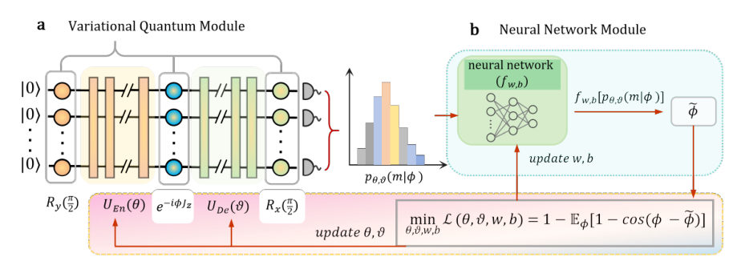
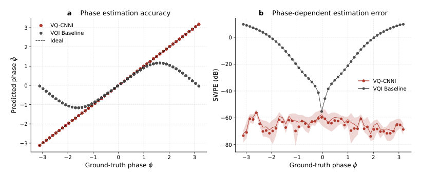
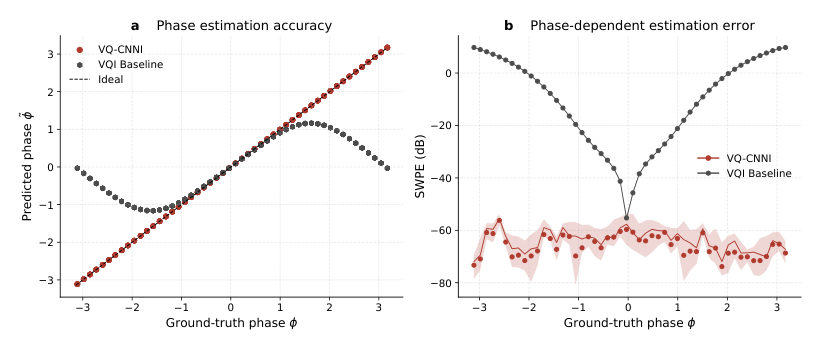

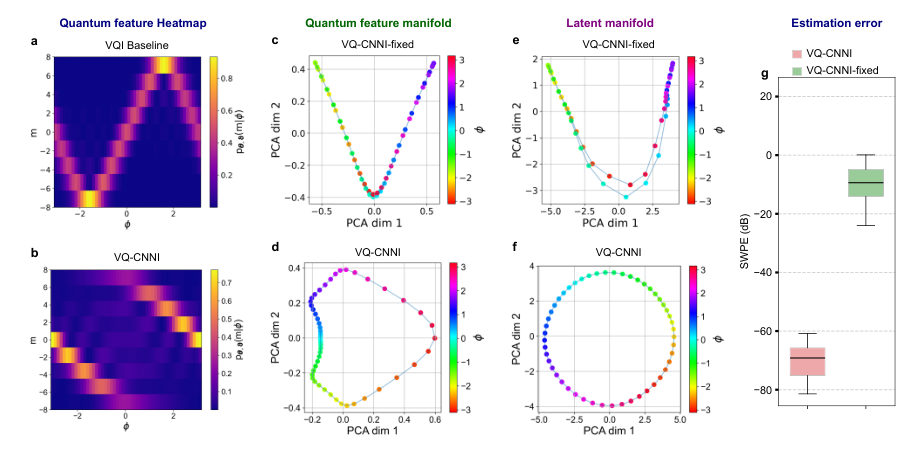
← Index · ← Previous · Next →
Authors: Zhuoran Bao, Daniel F. V. James
Type: theory · Category: quantum information and computing · PDF: https://arxiv.org/pdf/2605.24120v1
Analysis basis: full PDF text, analyzed in chunks
Topic relevance: quantum measurements 3/5 · entanglement & information structure 2/5
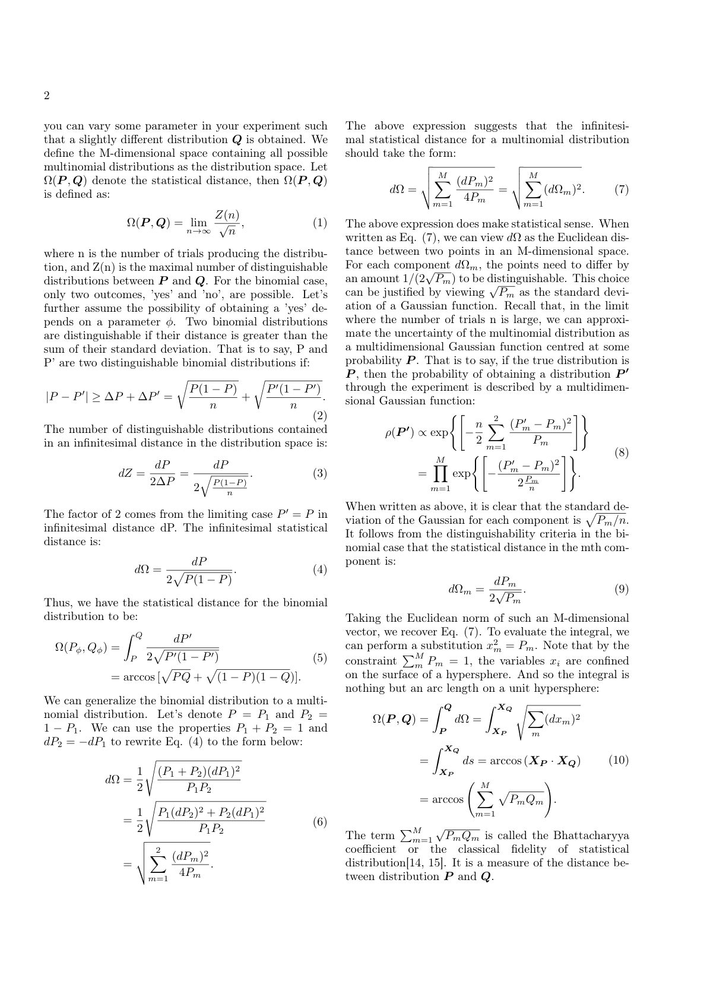
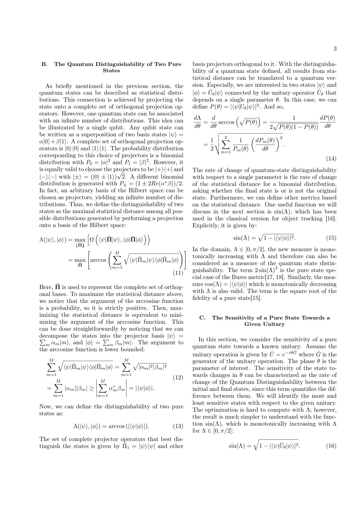
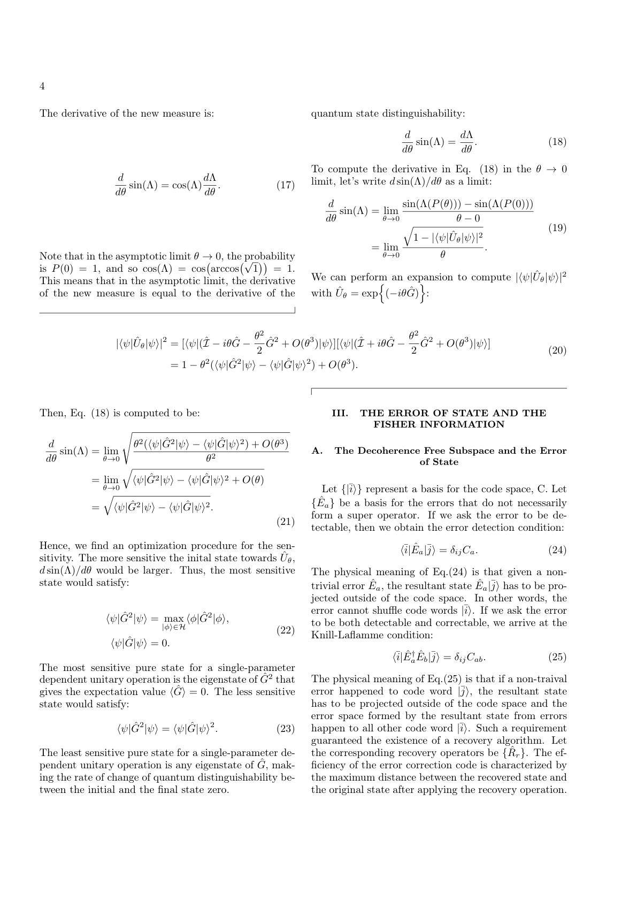
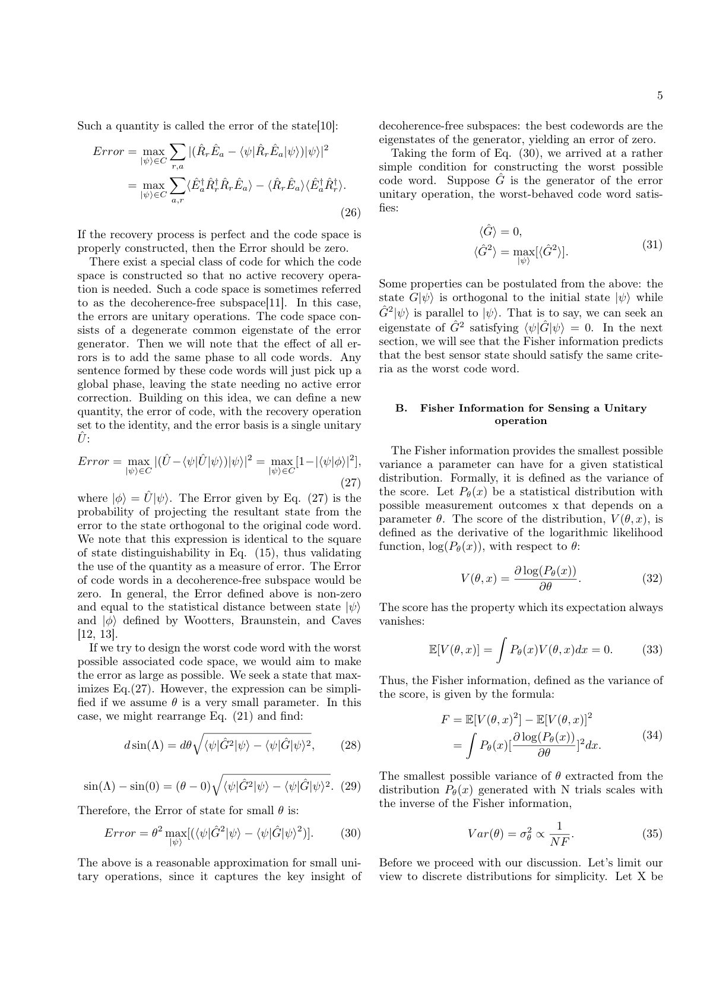
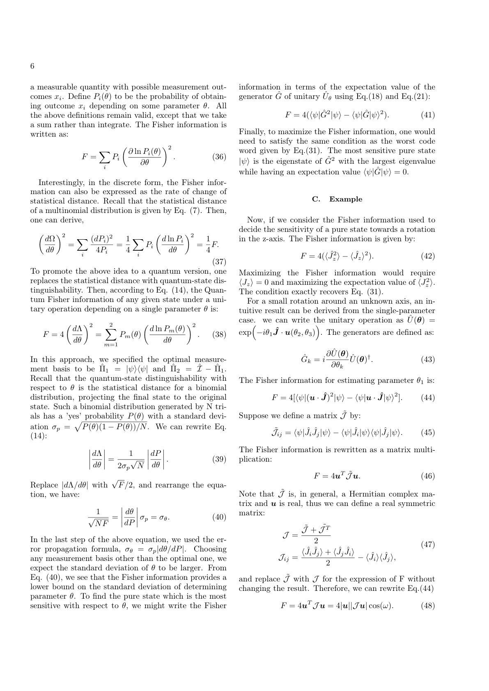
Summary. The paper demonstrates that quantum sensing and quantum error correction are two sides of the same coin, as the states most sensitive to a parameter are mathematically identical to the states most susceptible to errors. By linking Fisher Information to error metrics, the authors provide a method to construct optimal sensor states using principles from error-correcting codes.
Why it may be interesting. This work provides a unified theoretical framework that allows researchers to use the well-established tools of quantum error correction to design more robust and sensitive quantum sensors, which is highly relevant for quantum metrology and precision spectroscopy.
Main problem. Establishing a formal mathematical link between the sensitivity of a quantum state in parameter estimation (quantum sensing) and its vulnerability to unitary errors (quantum error correction).
Main result. The authors prove that the most sensitive states for rotation sensing and the worst-case codewords for error correction are governed by the same mathematical criteria, specifically maximizing the expectation value of the generator squared.
Method. The study uses statistical distance (Wootters' distance) and Fisher Information to relate state distinguishability to fidelity and error metrics, utilizing the Wigner-Eckart theorem and irreducible tensor operators for angular momentum calculations.
Model / system. The paper focuses on angular momentum (spin) systems undergoing unitary rotations, specifically exploring the construction of second-order anti-coherent states and the use of Absorption-Emission (AE) codes.
Key observables. Fisher Information, fidelity, Bures metric, angular momentum components (Jx, Jy, Jz), and the error of the state.
Important parameters / regimes. Rotation angle (theta), total angular momentum (J), and the generator of the unitary transformation (G).
Assumptions / limitations. The derivations primarily focus on pure quantum states and rely on a small-angle approximation (theta approaching zero) for the error-correction analysis.
Paper structure. The paper begins by establishing a mathematical connection between distinguishability and statistical distance, moves to a sensitivity analysis of unitary errors, demonstrates the symmetry between optimal sensing and worst-case error, and concludes with the construction of specific optimal sensor states using angular momentum algebra.
Quantum metrology has been making amazing progress in the past decades. It is always in researchers' interest to search for new optimal states that improve parameter estimation. In this paper, we point out a connection between the code's error correcting capacity and its ability to act as a sensor. We backed our claim by providing an example that relates the Absorption emission code to the sensor state for arbitrary state rotation. It is hoped that, in building such a unified theory, one can draw inspiration from error correction to develop promising quantum sensors.
Authors: Deepu Singh, Hari Sadhan Ghosh, Arpana Saboo, Soumyadeep Halder, Sonjoy Majumder
Type: theory · Category: quantum gases · PDF: https://arxiv.org/pdf/2605.26094v1
Analysis basis: full PDF text, analyzed in chunks
Topic relevance: non-equilibrium dynamics 3/5 · interference shaping light 2/5
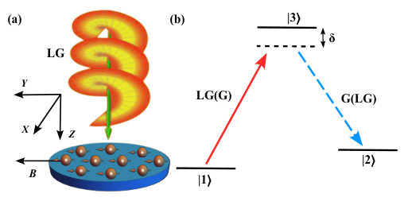
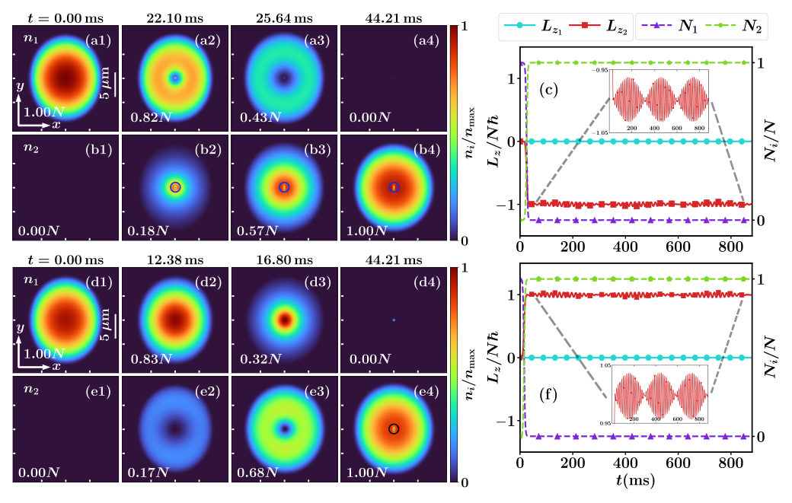
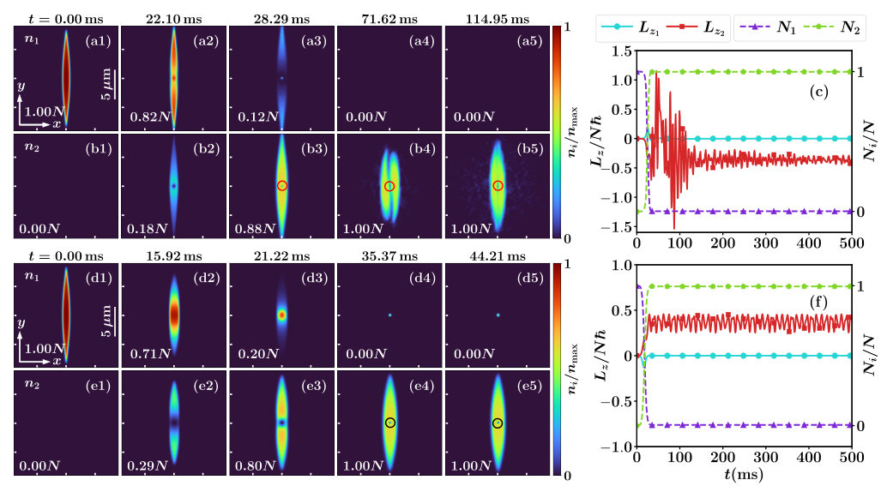
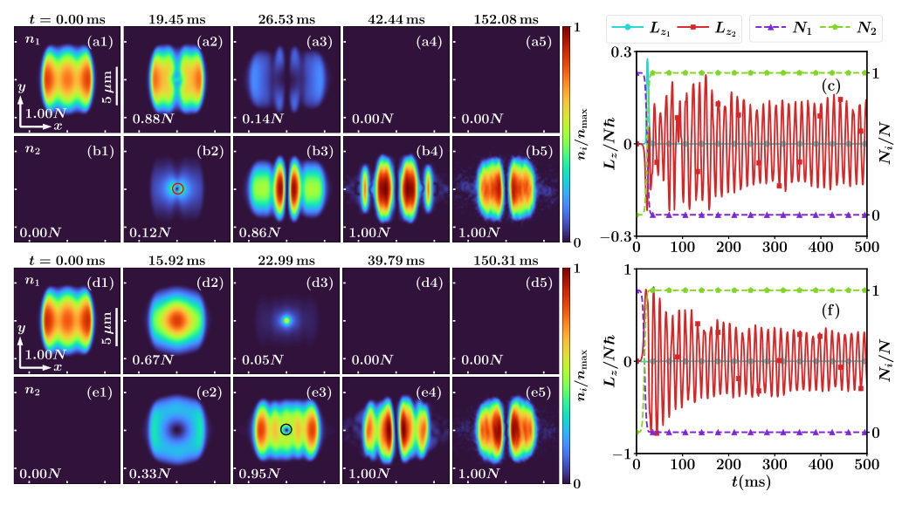
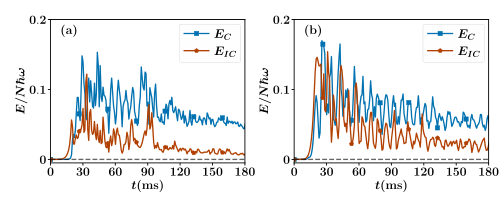
Summary. This paper explores how the orbital angular momentum of laser beams can be transferred to a dipolar Bose-Einstein condensate using the STIRAP technique. It demonstrates that the stability of the resulting quantized vortices is highly sensitive to whether the condensate is in a superfluid, droplet, or supersolid phase. The findings offer a versatile method for engineering topological states in quantum gases.
Why it may be interesting. It provides a theoretical framework for using coherent light-matter coupling to manipulate topological defects and probe the stability of exotic phases like supersolids and droplets in dipolar gases.
Main problem. Investigating the efficiency of transferring orbital angular momentum (OAM) from Laguerre-Gaussian beams to a dipolar Bose-Einstein condensate via the STIRAP protocol and how this transfer is affected by different interaction-driven phases.
Main result. The study finds that vortex nucleation and angular momentum retention depend on the BEC phase: stable vortices form in the superfluid phase, while the supersolid phase can lead to vortex expulsion depending on the magnetic field orientation.
Method. Numerical simulations using a set of Raman-coupled extended Gross-Pitaevskii equations (eGPE) including the Lee-Huang-Yang correction to account for quantum fluctuations.
Model / system. A quasi-two-dimensional trapped dipolar Bose-Einstein condensate consisting of two hyperfine states coupled via an intermediate state in a Lambda-configuration, subject to long-range dipole-dipole interactions and short-range contact interactions.
Key observables. Population transfer efficiency, angular momentum transfer, vortex topological charge, density profiles, and collective modes (scissors and quadrupole modes).
Important parameters / regimes. Superfluid, droplet, and supersolid phases; magnetic field orientation (parallel vs. perpendicular to beam propagation); pulse sequences (G-LG and LG-G); and trap anisotropy.
Assumptions / limitations. Adiabatic elimination of the intermediate excited state due to large detuning; use of a quasi-2D approximation for the LHY correction; and a mean-field framework.
Figures summary. Figure 1 shows the experimental schematic of the LG beam and the three-level system; Figure 2 and 4 illustrate time-resolved density distributions and vortex generation; Figure 5 tracks the evolution of collective modes and energy components.
Paper structure. The paper introduces the STIRAP-driven OAM transfer problem, describes the eGPE model and LHY correction, analyzes the dynamics across superfluid, droplet, and supersolid phases, and concludes with the implications for engineering vortex states.
Coherent light-matter coupling via STIRAP can offer a versatile route to nucleate quantized vortices in Bose-Einstein condensates, yet its efficacy in dipolar condensates remains an open question. Can the orbital angular momentum of a Laguerre-Gaussian beam be coherently transferred to a dipolar BEC via STIRAP? We investigate this for a quasi-two-dimensional trapped dipolar condensate using co-propagating Gaussian and Laguerre-Gaussian laser beams. The interplay between long-range dipole-dipole interactions and short-range contact interactions enables access to three interaction-driven phases: superfluid, droplet, and supersolid. We find that the amount of angular momentum transferred from the optical field to the dipolar condensate, along with the nucleation and persistence of vortices, depends strongly on the underlying phases of the dipolar BEC. In the superfluid, STIRAP achieves near-complete population transfer and nucleates a stable, long-lived quantized vortex. In the droplet phase, although the vortex remains pinned within the density profile, the angular momentum is partially retained and oscillatory, accompanied by droplet fragmentation and recombination. In the supersolid phase, when the external magnetic field is oriented perpendicular to the LG beam's propagation direction, the emergence of a modulated density distribution along with a slight reduction in inter-droplet coherence leads to vortex delocalization and eventually expels it along the field direction, yielding a vanishing average angular momentum. However, reorienting the magnetic polarization along the beam propagation direction restores efficient angular momentum transfer and stabilizes the vortex within the supersolid phase. Overall, our results demonstrate a versatile route to engineer vortex states and probe collective excitations in dipolar Bose gases via coherent light-matter coupling.
Authors: Fumin Wang
Type: theory · Category: quantum information and computing · PDF: https://arxiv.org/pdf/2605.25516v1
Analysis basis: full PDF text, analyzed in chunks
Topic relevance: entanglement & information structure 3/5 · quantum measurements 2/5
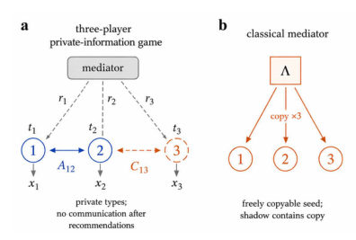
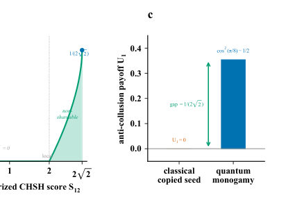
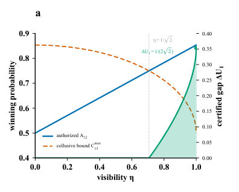
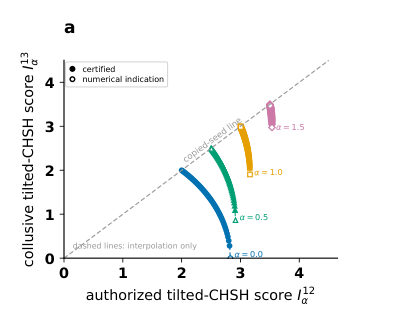
Summary. This paper develops a framework to quantify how quantum correlations can prevent third-party collusion. It demonstrates that quantum entanglement provides a unique 'anti-collusion power' that classical shared randomness lacks, specifically identifying the threshold where Bell non-locality enables certified security.
Why it may be interesting. It provides a quantitative resource theory for entanglement monogamy, framing it as a measurable 'shareability deficit' which is highly relevant for securing quantum networks and device-independent protocols.
Main problem. Quantifying the 'strategic non-shareability' of quantum correlations, specifically measuring the degree to which a mediator's coordination can be protected from an outside colluder in adversarial settings.
Main result. The paper proves that anti-collusion capacity equals the total-variation distance to the collusive shadow and identifies the CHSH Bell local bound as the sharp onset of positive certified anti-collusion power.
Method. The study uses a geometric approach based on total-variation distance, the NPA hierarchy (level-2 SDP relaxation) for bounding vulnerability, and Hoeffding-based protocols for finite-data certification.
Model / system. A tripartite setup involving an authorized pair (Players 1 and 2) and a potential colluder (Player 3), utilizing both classical hidden-variable models and quantum models (including Werner states and tilted-CHSH inequalities).
Key observables. CHSH score (S12), collusive leakage score (C13), anti-collusion capacity (CAC), and collusive vulnerability.
Important parameters / regimes. CHSH score (s), visibility parameter (eta) for Werner states, and the tilt parameter (alpha) for tilted-CHSH inequalities.
Assumptions / limitations. Assumes no-signalling consistency and finite alphabets; results for the CHSH slice rely on the Toner-Verstraete monogamy inequality.
Figures summary. Figure 1 visualizes the three-player game and classical vs. quantum collusion; Figure 2 shows the transition of anti-collusion power with noise; Figure 3 displays the Hoeffding-based certification and visibility thresholds; Figure 4 presents NPA upper bounds for tilted-CHSH inequalities.
Paper structure. The paper introduces the concept of strategic non-shareability, defines the mathematical framework of the collusive shadow, provides analytical proofs for the CHSH case, extends the analysis to tilted-CHSH via NPA hierarchy, and concludes with finite-data certification protocols.
Correlations distributed by a mediator are usually valued for the coordination they enable between authorized agents, but in adversarial settings a more decisive property is whether the same coordination can be inherited by an outside colluder without disturbing the authorized marginal. Classical shared randomness is freely copyable, so a hidden seed coordinating two agents can be duplicated for a third; entanglement is constrained by monogamy, which can forbid such lossless extensions in strongly nonlocal regimes. We turn this asymmetry into an operational resource for private-information games. For a fixed authorized behavior $P_{12}$, we define its \emph{collusive shadow} as the set of relabelled behaviors a colluder can reproduce in any admissible tripartite extension preserving $P_{12}$, and we identify \emph{strategic non-shareability} with the distance from this shadow. We prove that, on finite alphabets, the game-optimized anti-collusion capacity equals the total-variation distance to the shadow; a fixed game provides a task-specific separating witness, while optimization over relabelled games recovers the full distance. In the CHSH score slice, Toner--Verstraete monogamy yields the exact certified frontier, so the Bell local bound $S_{12}=2$ is the sharp onset of positive certified anti-collusion power, saturating at $1/(2\sqrt{2})$ for the maximally entangled CHSH strategy. Classical hidden-variable mediators have zero capacity in this slice. We complement these results with two operational tools: a Hoeffding-based finite-data certification protocol that turns observed Bell scores into confidence-bounded anti-collusion certificates, and a level-2 NPA semidefinite relaxation that extends certified upper envelopes to tilted Bell inequalities. These results recast entanglement monogamy as a measurable shareability deficit for quantum-mediated strategic networks.
Authors: Yusheng Zhao, Han Wang, Xin Liu, Xinjie Song, Jixi He, Lingwei Song, Yuanhe Ji, Ken Deng, Runqing Zhang, Zhiguo Huang, Ling Qian, Jize Han, Di Luo
Type: theory · Category: quantum information and computing · PDF: https://arxiv.org/pdf/2605.26021v1
Analysis basis: full PDF text, analyzed in chunks
Topic relevance: methods for driven-dissipative 3/5 · quantum measurements 2/5
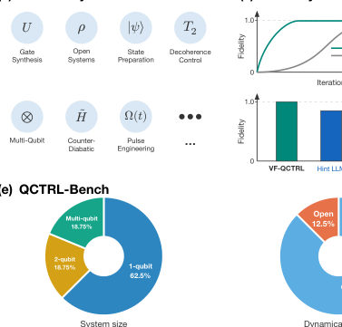
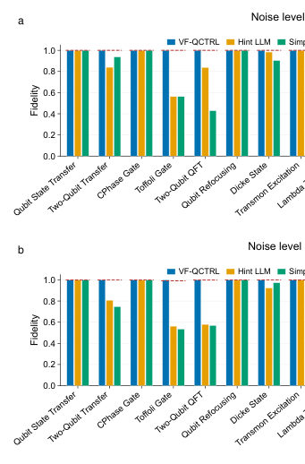
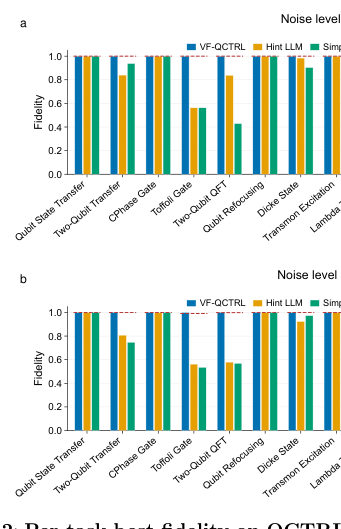
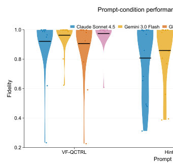
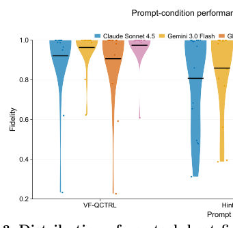
Summary. This paper introduces VF-QCTRL, a framework that uses physics-informed large language models to propose interpretable, analytic quantum control pulses. By combining symbolic reasoning with numerical optimization, it outperforms or matches classical methods in both noiseless and noisy environments. The approach is training-free and highly scalable across various quantum platforms.
Why it may be interesting. It presents a novel way to bridge symbolic physical reasoning with numerical optimization, potentially automating the discovery of robust control protocols for complex open quantum systems and many-body dynamics.
Main problem. Designing high-fidelity quantum control protocols is difficult due to complex optimization landscapes, hardware noise, and the uninterpretability of traditional numerical solvers.
Main result. The VF-QCTRL framework achieves performance competitive with or exceeding state-of-the-art classical solvers, providing interpretable analytic control ansatze that are robust to calibration noise.
Method. A physics-informed LLM framework that uses a Proposal Agent to generate symbolic control ansatze and a Reflection Agent to provide feedback, followed by SPSA-based numerical refinement of coefficients.
Model / system. A general framework applicable to diverse systems including single- and multi-qubit systems, closed and open quantum dynamics, Transmon qubits, and NMR spin systems.
Key observables. Fidelity (state and gate overlap), query efficiency, robustness to calibration noise, and pulse-resolution scaling.
Important parameters / regimes. Calibration noise levels (sigma = 0.02), pulse duration (T), time discretization (Nt), and coupling strengths (J).
Assumptions / limitations. The framework assumes that control pulses can be represented by a constrained symbolic grammar and that the LLM can reason about physical principles like counter-diabatic driving.
Figures summary. Figure 1 illustrates the VF-QCTRL architecture and benchmark composition; Figure 2 compares fidelity across tasks in noiseless and noisy regimes; Figure 3 shows fidelity distributions under noise; Figure 5 shows alignment with analytical counter-diabatic protocols; Figure 6 shows convergence trajectories; Figure 7 compares token efficiency.
Paper structure. The paper introduces the limitations of current methods, presents the VF-QCTRL architecture (Proposal, Reflection, and Refinement agents), introduces the QCTRL-Bench, evaluates performance across various tasks and noise regimes, and discusses scaling and interpretability.
Quantum control is essential for quantum information science and technology, yet designing high-fidelity control protocols remains challenging due to complex optimization landscapes, hardware noise, and long pulse sequences. Existing numerical solvers often require problem-specific engineering and produce opaque control amplitudes, while naive large language models (LLMs) lack the physical consistency and long-horizon precision for reliable quantum control synthesis. Here we introduce VF-QCTRL, a physics-informed large language model framework for general quantum control that combines symbolic reasoning with optimization to propose analytic control ansätze and coherently refine their parameters through feedback. To systematically evaluate LLM-driven quantum control, we develop QCTRL-BENCH, a benchmark spanning sixteen tasks across single- and multi-qubit systems, closed and open quantum dynamics, noiseless and noisy settings, and both analytic and numerical protocols. Across the benchmark, VF-QCTRL demonstrates strong universality, accuracy, efficiency, and interpretability: it applies to generic quantum control systems without task-specific training, achieves performance competitive with or exceeding state-of-the-art conventional solvers in both noiseless and noisy regimes with query efficiency, exhibits favorable inference-time scaling and pulse resolution scaling, and derives physically interpretable analytical protocols directly from prompts. Our results establish physics-informed LLM-based quantum control as a promising paradigm for accurate, efficient, interpretable, and training-free quantum control protocol design across a broad range of quantum systems.
Authors: Mackenson Polché, Varun Puram, Aditi Lal, Weronika Golletz, Joan Étude Arrow, Vardaan Sahgal, Kumar Ghosh, Giorgio Cortiana, Corey O'Meara
Type: both · Category: quantum information and computing · PDF: https://arxiv.org/pdf/2605.24252v1
Analysis basis: full PDF text, analyzed in chunks
Topic relevance: QC/QI experiment 3/5 · quantum measurements 1/5
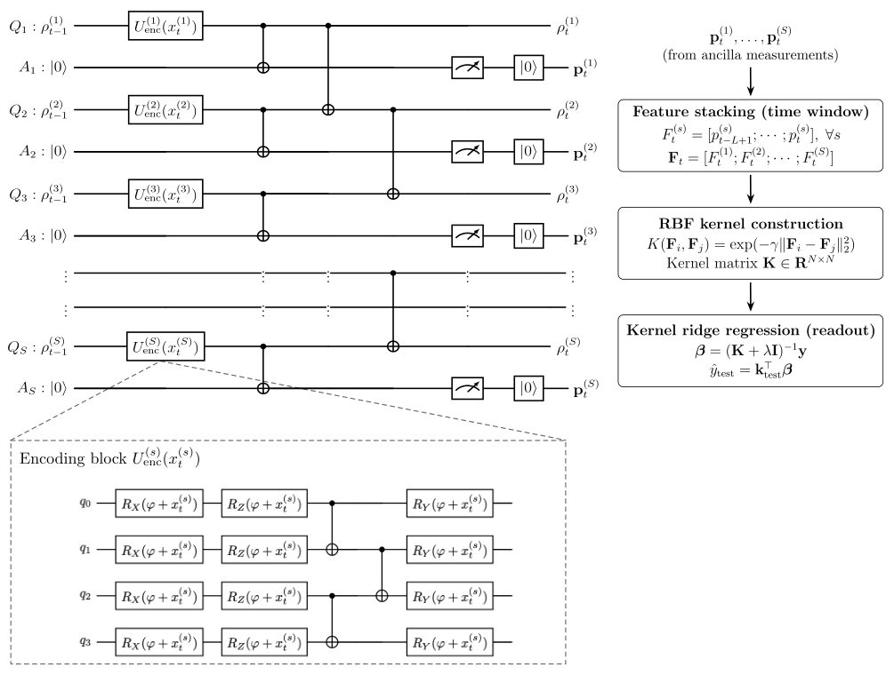
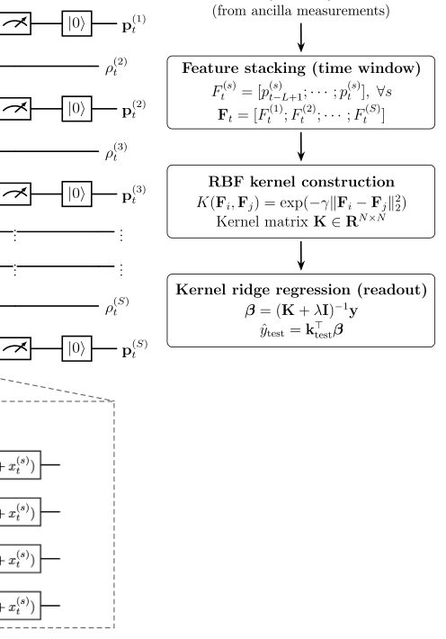
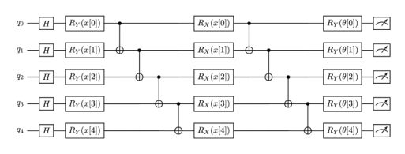
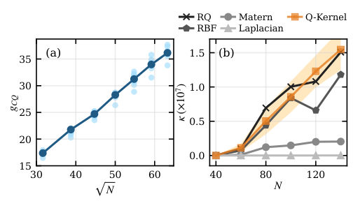
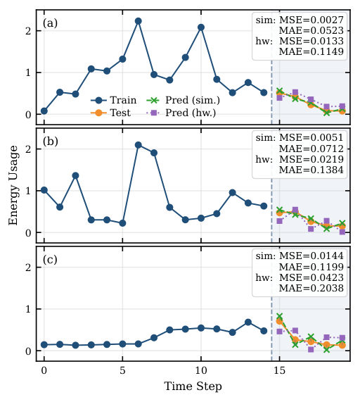
Summary. This paper demonstrates the application of hybrid quantum machine learning to large-scale energy demand forecasting. It shows that while quantum kernels can significantly outperform classical ones in simulation, real-world hardware noise currently limits the practical advantage on NISQ devices.
Why it may be interesting. not directly relevant
Main problem. Investigating the feasibility and performance of hybrid quantum-classical machine learning algorithms for multi-output time-series forecasting of energy consumption at a utility scale.
Main result. The QGP model achieved a 62.01% MAE reduction on simulator and 40.37% on hardware compared to classical GP, while KQRC-RM showed significant improvement on simulator but performance degradation on hardware due to device noise.
Method. Two hybrid frameworks were tested: Kernelized Quantum Reservoir Computing with Repeated Measurement (KQRC-RM) and Projected Quantum Kernel Gaussian Process (QGP) using local reduced-state statistics.
Model / system. The experiments were performed on the IBM marrakesh superconducting quantum processor and an MPS simulator, using a Smart Meter dataset of 103 residential electricity consumption time-series.
Key observables. Mean Absolute Error (MAE), Mean Squared Error (MSE), geometric difference (gCQ), and model complexity (kappa).
Important parameters / regimes. 100+ qubit scales (114 qubits for KQRC-RM, 100 qubits for QGP), number of system qubits per customer, and hardware noise parameters (T2 dephasing and CZ gate error).
Assumptions / limitations. The QGP model assumes conditional independence across outputs; hardware performance is limited by NISQ-era noise, decoherence, and readout errors.
Figures summary. Figure 1 shows the KQRC-RM circuit; Figure 2 shows the QGP feature map; Figure 3 displays geometric difference and model complexity; Figure 4 compares simulator vs hardware trajectories; Figure 5 shows per-horizon MAE; Figure 6 shows MSE for 5-customer groups; Figure 7 benchmarks against classical baselines; Figure 8 maps hardware noise; Figure 9 shows energy profiles and customer grouping; Figure 10 shows error vs qubit scaling; Figure 11 shows training loss and forecasting results; Figures 12-13 map the hardware noise landscape.
Paper structure. The paper introduces the forecasting problem, describes the two hybrid quantum architectures (KQRC-RM and QGP), details the experimental setup on IBM hardware and simulators, presents performance benchmarks against classical models, analyzes the impact of hardware noise, and concludes with scalability and utility-scale findings.
Multi-output time-series forecasting in energy systems is challenging because of nonlinear dynamics, multi-scale seasonality, and strong dependencies across correlated series. In this work, we investigate two hybrid quantum-classical frameworks for multi-stream time-series forecasting on a real Smart Meter dataset comprising 103 household electricity consumption time-series, with experiments executed on the $ibm\_marrakesh$ superconducting quantum processor. The first model, Kernelized Quantum Reservoir Computing with Repeated Measurement (KQRC-RM), combines coupled quantum reservoirs, ancilla-assisted repeated measurement, and kernelized readouts to model temporal dynamics and cross-stream correlations jointly. For a 3-stream time-series input and output, the KQRC-RM model using 114 qubits achieves an MAE of 0.0811 on MPS simulator (36.92\% improvement over its classical analog) whereas performance degrades to an MAE of 0.1524 on hardware. The second, a Projected Quantum Kernel Gaussian Process (QGP), replaces fidelity-based kernels with projected kernels constructed from local reduced-state statistics. Using a topology-aware 100-qubit QGP model to predict 100 multi-output time-series values, we observe 49\% of time-series outputs achieve high-accuracy predictions (MAE $<0.15$), with an average MAE of $0.082$ for this low-error group. The medium-error regime (MAE $0.15$-$0.35$) has an average MAE of $0.229$, while the high-error regime (MAE $>0.35$) has an average MAE of $0.664$. Overall, this reduces the average MAE relative to the classical GP baseline by 62.01\% on MPS simulator and 40.37\% on hardware. Together, these results demonstrate the feasibility of hybrid quantum machine learning for multi-input, multi-output time-series forecasting at the 100+ qubit scale on NISQ devices.
Authors: Chiragkumar R. Vasani, Erik Sjöqvist
Type: theory · Category: statistical mechanics · PDF: https://arxiv.org/pdf/2605.24645v1
Analysis basis: full PDF text, analyzed in chunks
Topic relevance: entanglement & information structure 3/5
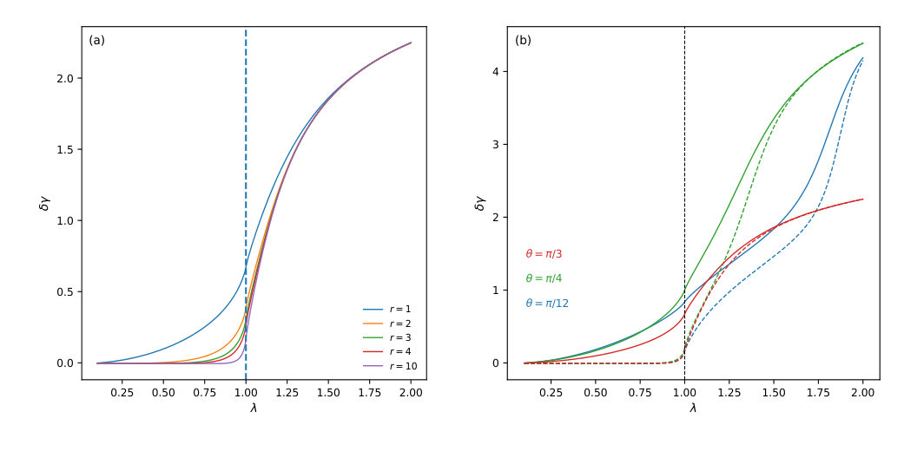
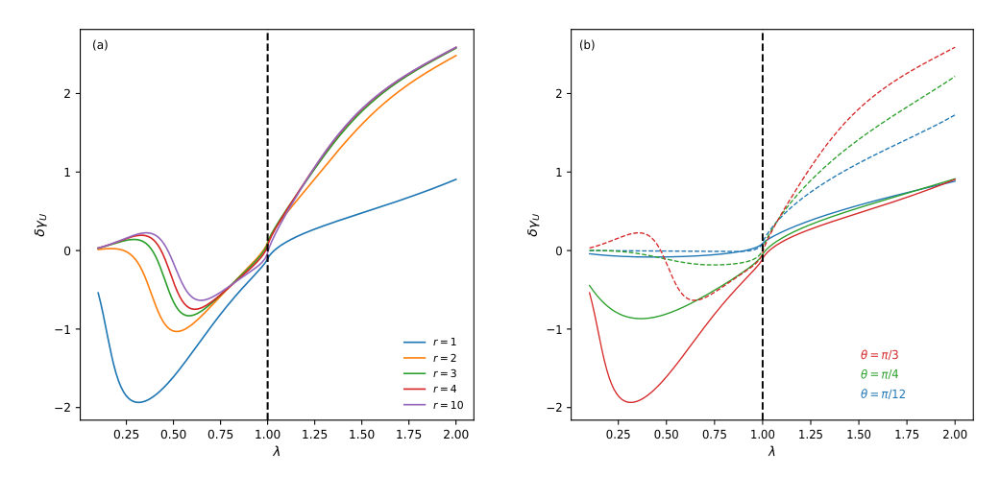
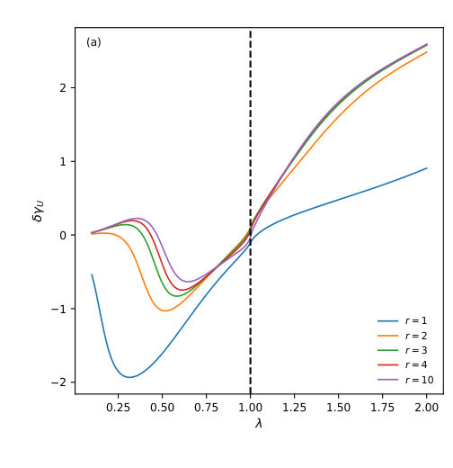
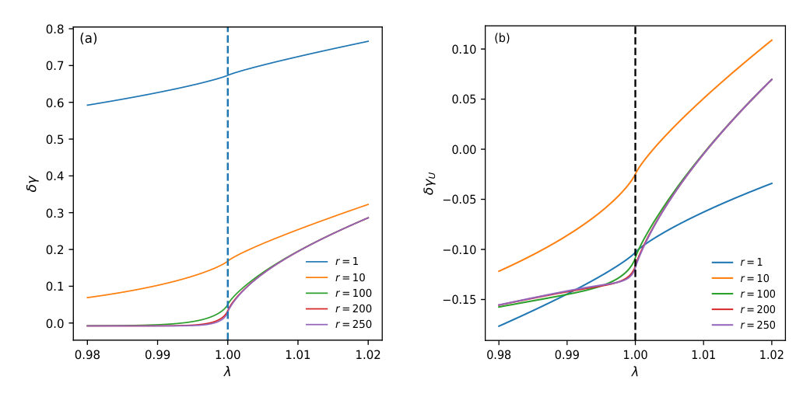
Summary. This paper compares the interferometric and Uhlmann geometric phases as indicators of quantum phase transitions in the transverse-field Ising model. It demonstrates that the interferometric phase is a superior order parameter because it correctly reflects the absence of long-range correlations in the paramagnetic phase. The work highlights how different geometric definitions respond uniquely to many-body critical fluctuations.
Why it may be interesting. This is interesting for many-body dynamics and open quantum systems because it explores how geometric structures in mixed-state density matrices encode information about quantum criticality and long-range correlations.
Main problem. The study investigates whether two types of geometric phases for mixed quantum states—the interferometric geometric phase and the Uhlmann phase—can serve as effective order parameters to identify quantum phase transitions.
Main result. The interferometric geometric phase deviation is found to be a more reliable indicator of the quantum phase transition in the transverse-field Ising model than the Uhlmann phase, as it vanishes for large spin separation in the paramagnetic phase.
Method. The authors use Jordan-Wigner, Fourier, and Bogoliubov transformations to diagonalize the Hamiltonian and calculate two-site reduced density matrices via Toeplitz determinants, then compute the geometric phases using local unitary rotations and the purification method.
Model / system. The transverse-field Ising chain, an exactly solvable model with a Hamiltonian consisting of nearest-neighbor Ising interactions and a transverse magnetic field.
Key observables. Interferometric geometric phase deviation (delta gamma), Uhlmann phase deviation (delta gamma_U), magnetization, and spin-spin correlation functions.
Important parameters / regimes. Transverse field strength (lambda), inter-site distance (r), and rotation angle (theta).
Assumptions / limitations. The study focuses on the zero-temperature ground state in the thermodynamic limit (N to infinity).
Figures summary. Figure 1 shows the interferometric phase deviation as a function of lambda for various distances; Figure 2 shows the Uhlmann phase deviation dependence on lambda, distance, and angle; Figure 3 compares the sensitivity of both phases near the critical point.
Paper structure. The paper introduces the problem of geometric phases as order parameters, describes the Ising model and the mathematical framework for density matrices, presents the calculation of both geometric phases, compares their behavior across the phase transition, and concludes with a discussion on their inequivalent structures.
Geometric phases have been extensively investigated in a wide range of quantum systems, often revealing deep connections to the underlying topology of many-body states. In this work, we examine two geometric phases defined for mixed quantum states$-$the interferometric geometric phase and the Uhlmann phase$-$extracted from two-site reduced density matrices of the transverse-field Ising model with nearest-neighbor interacting spins. By applying coordinated local unitary rotations to the spins, we compute the geometric phases associated with the two-site states across the critical point. We find that the interferometric phase is a more reliable indicator of the quantum phase transition in this model than the Uhlmann phase.
Authors: Qingchuan Yang, Xianing Feng, Lianfu Wei
Type: theory · Category: quantum information and computing · PDF: https://arxiv.org/pdf/2605.25049v1
Analysis basis: full PDF text, analyzed in chunks
Topic relevance: quantum measurements 3/5




Summary. This paper presents a hybrid quantum-classical neural network approach to achieve global quantum phase estimation without the typical loss of precision or phase ambiguity. By jointly training a shallow quantum circuit and a classical decoder, the method creates a well-conditioned, globally invertible mapping across the full 2pi phase range. The study highlights that the symmetry of the classical activation functions is crucial for maintaining stable and accurate estimation.
Why it may be interesting. It provides a novel way to use machine learning to overcome the precision-dynamic range trade-off in quantum sensing, specifically by optimizing the geometric structure of the quantum-classical interface.
Main problem. The fundamental trade-off in quantum metrology between high local precision and a large unambiguous dynamic range, which often leads to phase ambiguity or 'branch folding' in standard variational interferometers.
Main result. The introduction of a hybrid quantum-classical neural network interferometer (VQ-CNNI) that achieves global phase estimation over the full [-pi, pi) range with high precision by jointly optimizing quantum encoding and classical decoding.
Method. End-to-end joint optimization of a shallow parameterized quantum circuit and a classical neural network using a circular loss function and analyzing the geometric conditioning of the learned representation.
Model / system. A hybrid variational quantum-classical neural network interferometer (VQ-CNNI) utilizing a shallow Ramsey-type quantum circuit with unitary evolution U = exp(-i * phi * Jz) and projective measurements of population imbalance.
Key observables. Squared Wrapped Phase Error (SWPE), Quantum Fisher Information (QFI), Decoding Jacobian (J), and measurement statistics p(m|phi).
Important parameters / regimes. Phase range [-pi, pi), quantum circuit parameters (theta, vartheta), neural network weights and biases, and activation functions (e.g., Softsign, Tanh).
Assumptions / limitations. The performance advantage is attributed to the joint optimization of the hybrid architecture rather than increased quantum circuit depth.
Figures summary. Fig 1: VQ-CNNI pipeline; Fig 2: Comparison of predicted vs. ground-truth phase and SWPE for VQI vs. VQ-CNNI; Fig 3: Visualization of quantum feature and latent manifolds; Fig 4: Evolution of QFI and SWPE during training; Fig 5: Impact of activation function symmetry on SWPE and Jacobian statistics.
Paper structure. The paper introduces the VQ-CNNI architecture, details the joint optimization method and circular loss function, compares performance against a VQI baseline, analyzes the geometric conditioning of the learned features, investigates the role of activation function symmetry, and concludes with the implications for programmable quantum metrology.
Achieving both high precision and large dynamic range remains a central challenge in quantum metrology, as improving local sensitivity typically reduces the unambiguous estimation range. Variational quantum interferometers enhance precision but are generally limited to narrow operating regimes. Here we introduce a hybrid variational quantum--classical neural network interferometer (VQ-CNNI), where a shallow quantum circuit encodes phase-dependent measurement statistics and a neural network performs nonlinear phase reconstruction. Joint optimization enables accurate and unambiguous phase estimation over $[-π,π)$ without loss of precision. We show that this performance requires co-optimization of quantum encoding and classical decoding. Visualization of the learned representation geometry links global estimation to well-conditioned measurement statistics across the full phase range, enabling stable inversion. Odd-symmetric activations further improve robustness by promoting global consistency. These results suggest that global quantum metrology can be understood through the learnability of the quantum--classical representation, providing a practical route to programmable interferometers with both high precision and large dynamic range.
Authors: R. D. Ivanovskikh, W. V. Pogosov, A. A. Elistratov, A. Yu. Dmitriev, T. R. Sabirov, A. V. Vasenin, S. A. Gunin, O. V. Astafiev
Type: theory · Category: other · PDF: https://arxiv.org/pdf/2605.25828v1
Analysis basis: full PDF text, analyzed in chunks
Topic relevance: interference shaping light 2/5 · methods for driven-dissipative 2/5 · non-equilibrium dynamics 2/5 · quantum measurements 2/5
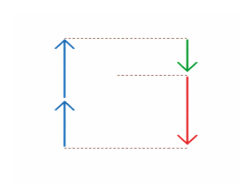
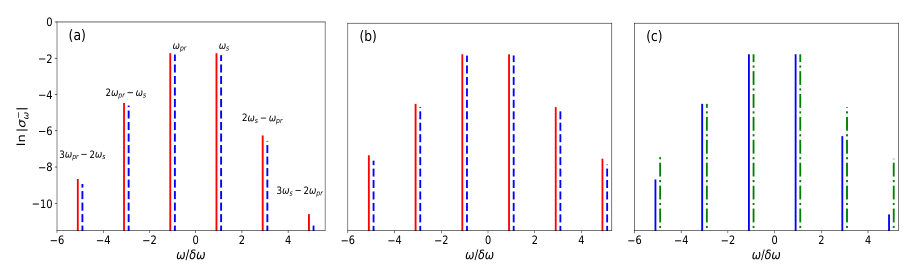

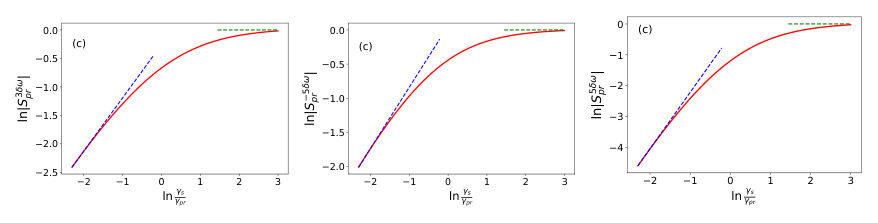
Summary. This paper develops a theory showing that the sideband peaks in quantum wave mixing can act as a fingerprint for antibunched light. It demonstrates that by tuning the linewidth ratio of a source and probe qubit, one can observe the parametric suppression of specific multiphoton pathways. This allows for the frequency-domain identification of the photon statistics of microwave radiation.
Why it may be interesting. It provides a novel spectroscopic method to characterize the quantum nature of itinerant light using nonlinear wave mixing, which is highly relevant for characterizing photon statistics in circuit QED and open quantum systems.
Main problem. Developing an analytical theory to use cascaded quantum wave mixing (QWM) as a spectroscopic tool to identify the photon statistics (specifically antibunching) of incident microwave radiation.
Main result. The study establishes that the sideband hierarchy in QWM provides a frequency-domain fingerprint of antibunched light, where higher-order sidebands are parametrically suppressed based on the linewidth ratio of the source and probe.
Method. The authors use a weak-drive Taylor expansion and a Neumann series expansion of the stationary cascaded master equation, validated by numerical solutions of the full dynamics.
Model / system. A cascaded waveguide-QED system consisting of a source qubit and a probe qubit coupled unidirectionally to a one-dimensional microwave waveguide, modeled using a cascaded master equation.
Key observables. Probe coherence, probe inversion, and the amplitudes/frequencies of the QWM sideband hierarchy.
Important parameters / regimes. The ratio of decay rates (gamma_s/gamma_pr), the dimensionless cascaded coupling (alpha), and the drive amplitudes (Omega_s, Omega_pr).
Assumptions / limitations. The theory assumes a weak-drive regime, a stationary (steady-state) approximation, and negligible back-action from the probe to the source.
Figures summary. Figure 1 shows a schematic of multiphoton processes; Figure 2 compares analytical and numerical QWM spectra in the antibunching and coherent-filtering regimes; Figure 3 illustrates the scaling of side-peak amplitudes as a function of the source linewidth.
Paper structure. The paper introduces the problem of using QWM for photon statistics, presents the analytical framework using a master equation and Taylor expansion, discusses the two physical limits (coherent-filtering vs. antibunching), provides numerical validation, and concludes with the diagnostic utility of the sideband hierarchy.
Quantum wave mixing on a single superconducting qubit produces a hierarchy of coherent side peaks associated with elastic multiphoton scattering pathways. In a cascaded source--probe geometry these pathways become sensitive to the photon statistics of the radiation emitted by the source qubit. We develop an analytical theory of this effect starting from the cascaded master equation in the weak-driving regime. In the coherent-filtering limit $γ_{\rm s}\ggγ_{\rm pr}$, the standard coherent--coherent wave-mixing hierarchy is recovered. In the opposite limit $γ_{\rm pr}\ggγ_{\rm s}$, side peaks associated with multiphoton absorption from the antibunched source field are parametrically suppressed. Numerical solutions confirm the analytical scaling laws. The resulting sideband hierarchy provides a frequency-domain fingerprint of antibunched itinerant microwave light.
Authors: Rupayan Saha, Matthias Krüger
Type: theory · Category: statistical mechanics · PDF: https://arxiv.org/pdf/2605.24467v1
Analysis basis: full PDF text, analyzed in chunks
Topic relevance: Frenkel-Kontorova 2/5 · correlated / nonlocal dissipation 2/5 · methods for driven-dissipative 2/5 · non-equilibrium dynamics 2/5
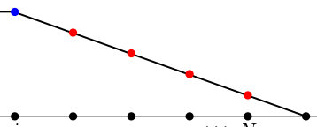
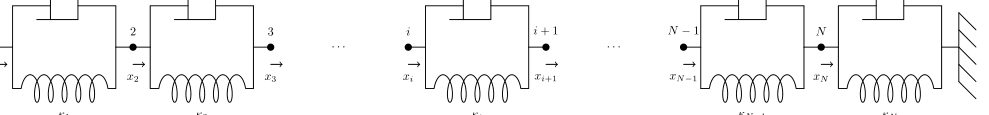
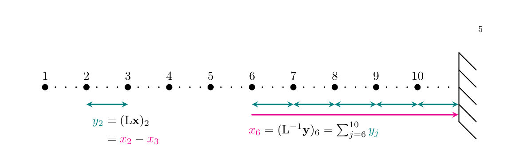
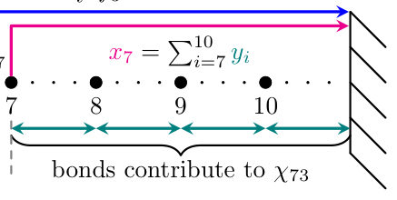
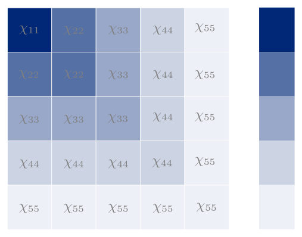
Summary. This paper provides an exact solution for the dynamics of heterogeneous, overdamped 1D chains with relative friction. It reveals a counter-intuitive 'X-ray vision' effect where the mechanical response is insensitive to intermediate chain properties and establishes how different subspaces of the system govern steady-state versus relaxation behaviors.
Why it may be interesting. not directly relevant
Main problem. The paper addresses the analytical treatment of heterogeneous, overdamped, one-dimensional harmonic chains with momentum-conserving dissipation, specifically focusing on the mechanical response when a free end is present.
Main result. The authors find that such chains exhibit an 'X-ray vision' property where the response of a particle to a force is independent of the material properties between them, and they demonstrate a decomposition of the state space into free and constrained subspaces governing steady-state and relaxation dynamics.
Method. The study uses an exact analytical diagonalization of the drift operator via a forward-difference transformation to map site variables to bond variables.
Model / system. A 1D Kelvin-Voigt chain consisting of $N$ harmonically coupled particles with nearest-neighbor stiffness and momentum-conserving (relative) friction, featuring one free end and one fixed end.
Key observables. The response matrix (susceptibility) $\chi_{ij}(t)$, steady-state velocity, and relaxation/recoil motion.
Important parameters / regimes. Overdamped limit, momentum-conserving dissipation, rank-deficient interaction matrices (free bonds), and the distinction between steady-state and relaxation regimes.
Assumptions / limitations. The dynamics are assumed to be overdamped ($m o 0$) and the dissipation is strictly momentum-conserving (relative friction).
Figures summary. Figure 1 shows the staircase displacement profile in an undamped chain; Figure 2 illustrates the Kelvin-Voigt model; Figure 3 depicts the forward-difference operator $L$ and its inverse; Figure 4 visualizes the susceptibility matrix; Figure 7 shows a viscoelastic fluid between parallel plates.
Paper structure. The paper introduces the problem of heterogeneous chains, defines the Kelvin-Voigt model and its mathematical framework, presents the analytical diagonalization method, derives the 'X-ray vision' response property, discusses the decomposition of state space into free and constrained subspaces, and applies the results to a viscoelastic fluid between plates.
We exactly solve a model of a heterogeneous chain of overdamped, harmonically coupled particles with momentum-conserving dissipation. Despite being governed by a non-symmetric drift operator, the system admits an analytical diagonalization by use of a forward-difference transformation. In case of one free end, the response matrix shows a peculiar staircase form: the response of particle i to a force acting on particle j is independent of the properties and the length of the chain-part between i and j. For rank-deficient interaction matrices, the state space is decomposed into free and constrained subspaces. We demonstrate that this separation has clear physical consequences: the free subspace governs steady state responses, while the constraint subspace governs the relaxation after cessation of forcing. These results establish a framework for analyzing heterogeneous overdamped dynamics with momentum conservation.
Authors: Yoshihiko Hasegawa
Type: theory · Category: statistical mechanics · PDF: https://arxiv.org/pdf/2605.24365v1
Analysis basis: full PDF text, analyzed in chunks
Topic relevance: correlated / nonlocal dissipation 2/5 · entanglement & information structure 2/5 · non-equilibrium dynamics 2/5 · quantum measurements 2/5
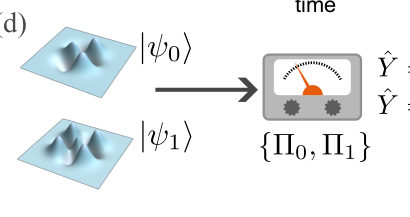
Summary. This paper establishes fundamental lower bounds on the minimum error achievable in binary classification tasks based on thermodynamic quantities. It proves that reducing classification error requires increasing thermodynamic costs like entropy production. The results extend from classical Markov processes to quantum systems, relating error to Hamiltonian variance.
Why it may be interesting. It provides a fundamental link between information processing accuracy and physical dissipation, which is highly relevant for understanding the thermodynamic limits of open quantum systems and the precision of quantum state discrimination.
Main problem. Establishing a fundamental thermodynamic trade-off between classification error (Bayes error) and thermodynamic costs such as entropy production and dynamical activity.
Main result. The study derives lower bounds on the Bayes error in binary classification, showing that higher thermodynamic costs enable lower error, while vanishing costs lead to random guessing (error of 1/2).
Method. The author uses stochastic thermodynamics, information theory (Bhattacharyya coefficient, Pinsker inequality), and the Cramér-Rao inequality to link precision to dissipation.
Model / system. The models include continuous-time Markov processes on finite state spaces for classical classification and closed quantum systems evolving under class-dependent Hamiltonians for quantum classification.
Key observables. Bayes error (P_err), entropy production (Sigma), dynamical activity (A), and Hamiltonian variance.
Important parameters / regimes. The limits where entropy production or dynamical activity vanish, and the regime of uniform priors.
Assumptions / limitations. Assumes local detailed balance for Markov processes, identical initial states for both classes, and uncoupled dynamics for the two-process construction.
Figures summary. Figure 1 provides schematic illustrations of four classification settings: classical machine learning, Markov process state-based, Markov process trajectory-based, and quantum state discrimination.
Paper structure. The paper introduces the problem of error-cost trade-offs, develops classical bounds using Markov processes and entropy/activity, extends these to trajectory-based classification, provides a quantum generalization via the Helstrom bound, and concludes with mathematical appendices for detailed derivations.
The Landauer principle bridges the energetic cost and information processing, showing that irreversible computation inevitably demands energy dissipation. As energy demands from computation continue to rise, approximate computing has attracted considerable attention. Approximate computing is based on the idea that energy consumption can be reduced by sacrificing computational accuracy. This raises a fundamental question about the relationship between error and thermodynamic cost in information processing. In this study, we derive the error-cost trade-off in the binary classifier by considering classification based on Markov processes. We obtain the lower bounds on the Bayes error in terms of thermodynamic costs such as entropy production and dynamical activity. Our results show that when entropy production or dynamical activity vanishes, the Bayes error reaches $1/2$, equivalent to random guessing, while greater thermodynamic costs enable lower error. This establishes a fundamental trade-off between error and cost in information processing by thermodynamic systems. Because the Bayes error provides the lowest achievable error among all possible classifiers, the classification error cannot fall below the obtained bounds given the entropy production or dynamical activity. We also discuss the quantum generalization and show that the Bayes error of the quantum classifier is bounded from below by the variance of the Hamiltonian.
Authors: José A. Martins
Type: both · Category: statistical mechanics · PDF: https://arxiv.org/pdf/2605.25989v1
Analysis basis: full PDF text, analyzed in chunks
Topic relevance: Keldysh / 2PI / non-Gaussian methods 2/5 · non-equilibrium dynamics 2/5 · non-equilibrium universality 2/5
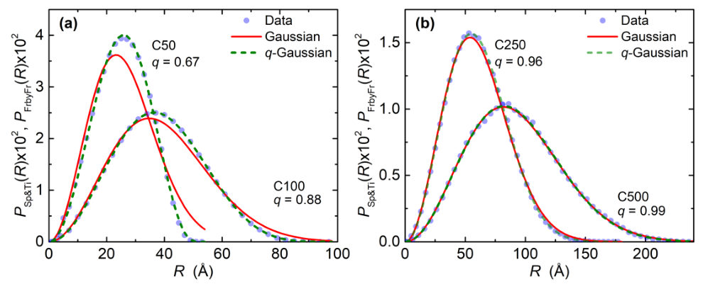
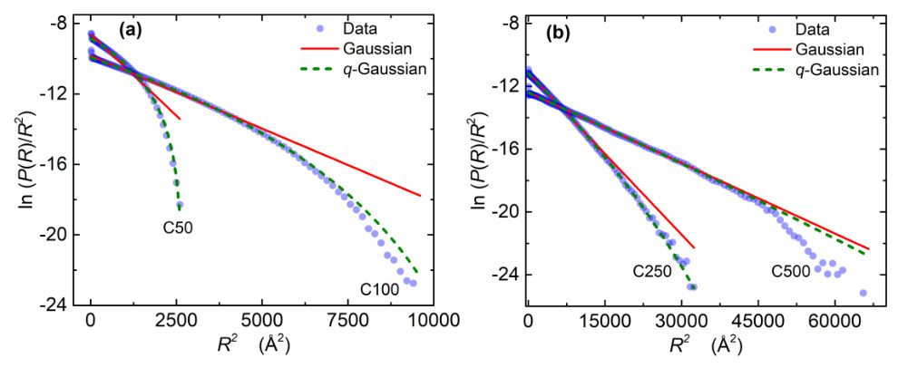
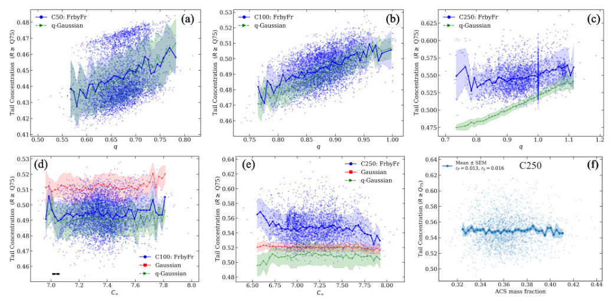
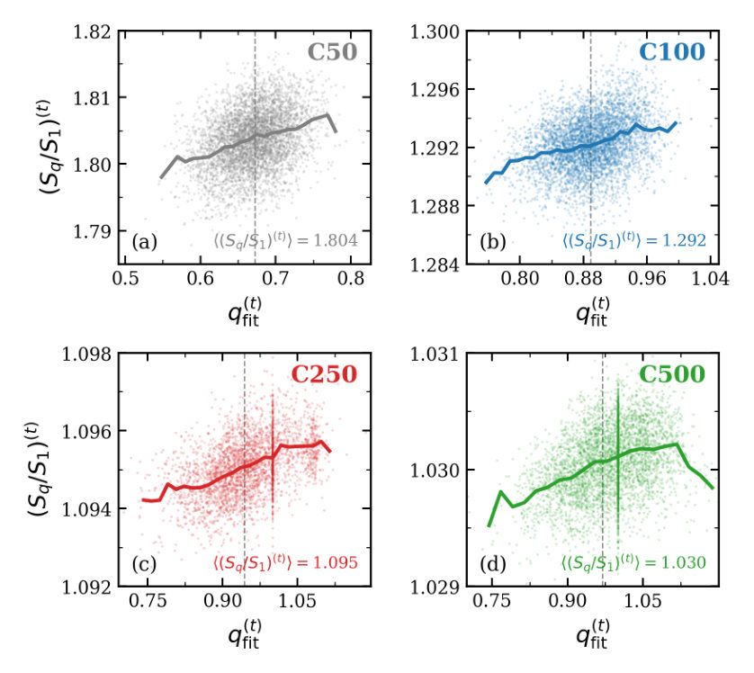
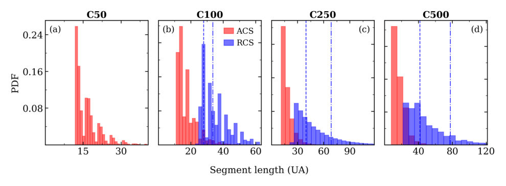
Summary. This paper demonstrates that the transition from non-Gaussian to Gaussian statistics in polymer melts is not due to the disappearance of local structural heterogeneities, but rather because increasing chain length adds enough random segments to mask the underlying aligned segments. Using Tsallis statistics, the author quantifies this as a reduction in the entropic index q toward unity.
Why it may be interesting. The study explores the emergence of extensive (Boltzmann-Gibbs) statistics from non-extensive (Tsallis) regimes via a masking mechanism, which is conceptually relevant to understanding how local correlations and non-equilibrium features are lost in large-scale many-body systems.
Main problem. Understanding the molecular mechanism behind the recovery of Gaussian statistics in long polymer chains and determining if this transition results from the erasure of local conformational heterogeneities.
Main result. The transition to Gaussian behavior is a statistical masking effect where the accumulation of random conformational segments (RCS) obscures persistent, non-Gaussian aligned chain segments (ACS), rather than the erasure of those segments.
Method. Atomistic molecular dynamics simulations of polyethylene melts combined with a statistical analysis using the Tsallis non-extensive framework and q-Gaussian distributions.
Model / system. Polyethylene melts with varying chain lengths (C50 to C500) modeled as a 3D mosaic of Aligned Chain Segments (ACS), Random Conformational Sequences (RCS), and Chain Ends (CE).
Key observables. End-to-end distance distribution P(R), entropic index q, entropy ratio S_q/S_1, tail concentration T2, and non-Gaussianity parameter alpha2.
Important parameters / regimes. Chain length (N), entropic index (q), Kuhn scale, and the mass fraction of ACS.
Assumptions / limitations. The q-Gaussian model is applied within the range 0 < q < 5/3 to ensure finite moments in 3D; the system is studied in the NpT ensemble.
Figures summary. Figures show segment length distributions for ACS and RCS, the evolution of end-to-end distance distributions P(R) across chain lengths, and the relationship between the entropy ratio and the number of Kuhn segments per RCS.
Paper structure. The paper introduces the problem of non-Gaussianity in short chains, defines the structural model (ACS/RCS), presents the mathematical framework of Tsallis statistics, details the MD simulation methodology, analyzes the evolution of the entropic index q and entropy ratio with chain length, and concludes with the 'statistical masking' hypothesis.
Short polymer chains exhibit clear deviations from Gaussian end-to-end distance statistics, yet the molecular mechanism by which Gaussian behavior is recovered in long chains remains unestablished. Atomistic molecular dynamics simulations of polyethylene melts reveal that conformational heterogeneity persists at the Kuhn scale across all chain lengths, consisting of a mosaic of slow-relaxing, extended aligned chain segments (ACS) and coiled segments -- random conformational sequences (RCS) and chain ends (CE). We show that the end-to-end distance distributions for both unentangled and entangled chains are accurately described by a $q$-Gaussian function, with the entropic index $q$ increasing systematically from $0.67$ (C50) to $0.99$ (C500). This evolution tracks the emergence and accumulation of RCS segments, which are absent in short chains, establishing $q$ as a quantitative ``heterogeneity index''. The $q < 1$ values are a signature of non-extensive statistics, with the ratio of Tsallis to Boltzmann-Gibbs entropy ($S_q/S_1$), computed directly from simulation data without fitting, decreasing from $1.80$ (C50) to $1.03$ (C500). Crucially, we demonstrate that Gaussian recovery does not result from the erasure of Kuhn-scale heterogeneities, as ACS domains persist in all chain lengths above the critical mass ($\approx 35\%$). Instead, the transition to Gaussian statistics is a statistical masking effect, where the accumulation of independent RCS segments progressively obscures the non-Gaussian signatures of the persistent ACS domains.
Authors: Luca Casagrande, Alessandro Manacorda, Etienne Fodor
Type: theory · Category: statistical mechanics · PDF: https://arxiv.org/pdf/2605.25744v1
Analysis basis: full PDF text, analyzed in chunks
Topic relevance: driven-dissipative phase transition 2/5 · non-equilibrium dynamics 2/5 · non-equilibrium universality 2/5
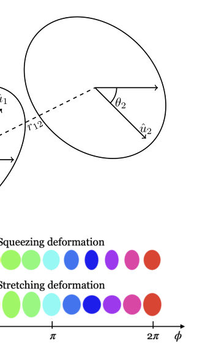
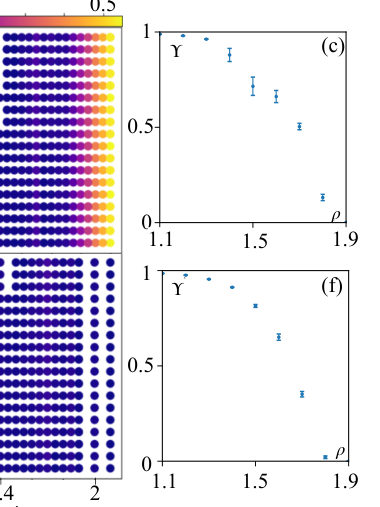
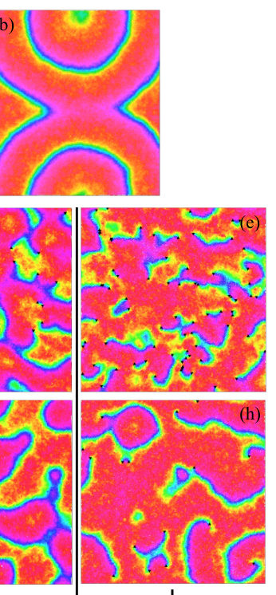
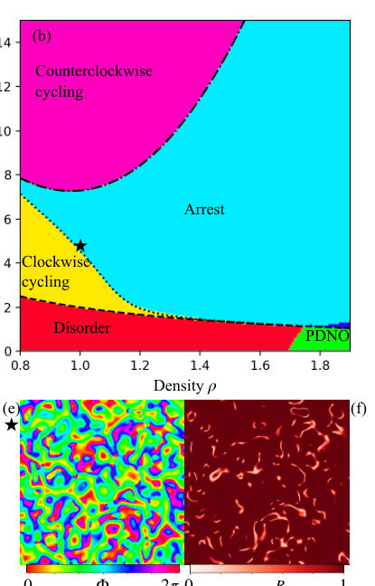
Summary. This paper investigates how the shape-changing pulsations of anisotropic particles lead to complex collective behaviors like deformation waves and nematic order. By comparing squeezing and stretching modes, it demonstrates how internal particle dynamics can drive large-scale pattern formation in active matter.
Why it may be interesting. not directly relevant
Main problem. Understanding how the anisotropic deformation of pulsating particles affects their collective properties and the emergence of deformation waves in dense assemblies.
Main result. The study identifies various collective states including arrested, cycling, and deformation wave phases, showing that squeezing-type deformation uniquely allows for a nematic phase at high densities.
Method. The authors use numerical simulations of overdamped Langevin dynamics and derive a hydrodynamic description through a coarse-graining procedure and perturbative approach.
Model / system. A 2D system of N anisotropic, pulsating, active particles (ellipses) with internal degrees of freedom including position, orientation, and an internal phase.
Key observables. Phase synchronization (R_phi), nematic order (R_theta), current (Upsilon), and topological charge of defects (kappa).
Important parameters / regimes. Particle density (rho_0), synchronization strength (epsilon), deformation amplitude (lambda), and internal driving frequency (omega).
Assumptions / limitations. The hydrodynamic model assumes constant density, neglects position-based interactions in simplified dynamics, and uses an analytical approximation for interparticle distance.
Figures summary. Figure 1 illustrates particle parametrization and deformation modes; Figure 2 shows phase diagrams for squeezing and stretching modes; Figure 4 presents hydrodynamic phase diagrams and numerical profiles of synchronization fields showing waves and defects.
Paper structure. The paper introduces the physical problem and particle model, presents numerical simulations and phase diagrams, derives a hydrodynamic description via coarse-graining, performs linear stability analysis, and concludes with a discussion of results and limitations.
Capturing the emergence of deformation waves in contractile living tissues is a challenge that has recently been tackled with models of actively deformable particles. Inspired by the anisotropic deformation of cardiomyocytes in cardiac tissues, we examine how the pulsation of elliptical particles affects their collective properties in dense assemblies. We introduce two types of deformation where the eccentricity of each particle is subject to a periodic drive, and examine the interplay between nematic order and synchronized deformation via a systematic phase diagram. We derive a hydrodynamic description through a coarse-graining procedure, and show that it qualitatively captures the main collective states of the microscopic dynamics. Overall, our model provides key insights into how an active anisotropic deformation yields waves that self-organize into various dynamical patterns.
Authors: Shivang Rawat, Flaviano Morone, David J. Heeger, Stefano Martiniani
Type: theory · Category: statistical mechanics · PDF: https://arxiv.org/pdf/2605.25278v1
Analysis basis: full PDF text, analyzed in chunks
Topic relevance: methods for driven-dissipative 2/5 · non-equilibrium dynamics 2/5 · quantum measurements 2/5
Summary. This paper solves the long-standing problem of finding exact analytical formulas for the variance and Fano factor of level crossings in Gaussian processes. It demonstrates that while the mean crossing rate only depends on local properties, the variance captures the full correlation structure, allowing one to distinguish between clustered and regular crossing events.
Why it may be interesting. This is highly relevant for researchers studying open quantum systems or quantum optics where Gaussian noise and fluctuations drive transitions, as it provides tools to characterize the temporal clustering of quantum jumps or signal crossings.
Main problem. Deriving exact analytical expressions for the variance and Fano factor of level crossings at arbitrary thresholds in stationary Gaussian processes, moving beyond the mean-rate predictions of the traditional Kac-Rice formula.
Main result. The authors provide closed-form, single-integral expressions for the variance and Fano factor, revealing how the full temporal correlation structure determines whether crossings cluster (super-Poissonian) or are regular (sub-Poissonian).
Method. The derivation uses the Kac-Rice formula, variable transformations (such as a pi/4 rotation of velocity variables), and the evaluation of asymmetric Gaussian integrals using the error function and Owen's T function.
Model / system. The framework applies to smooth, stationary, zero-mean Gaussian processes, with specific applications to stochastic damped harmonic oscillators and mean-reverting processes driven by Ornstein-Uhlenbeck noise.
Key observables. Number of upcrossings, total crossings, variance of crossings, and the Fano factor (ratio of variance to mean).
Important parameters / regimes. Threshold level (u/sigma), damping ratio (zeta), natural frequency (omega_0), and correlation decay parameters (alpha).
Assumptions / limitations. The stochastic process must be stationary, Gaussian, and smooth (twice-differentiable).
Figures summary. Figure 1 shows sample paths of an oscillator with identified crossings; Figure 2 shows the dependence of the Fano factor on the damping ratio; Figure 3 validates analytical results against numerical simulations; Figure 4 shows heatmaps of the Fano factor for the SDHO; Figure 5 shows Fano factor plots for the RQ process.
Paper structure. The paper introduces the limitation of the Kac-Rice formula, presents Theorems for the mean and variance of upcrossings and total crossings, applies these to specific models (SDHO, OU-driven, RQ processes), and provides a rigorous mathematical appendix containing the integral derivations and lemmas.
Understanding the statistics of level crossings in stochastic processes is crucial across many scientific disciplines. The traditional Kac-Rice formula gives the mean rate of level crossings and has found broad use. However, that mean rate captures only a coarse summary of the crossing process. It depends entirely on local properties of the stochastic process at a given instant and is therefore blind to the correlation structure of the process over time. To understand whether crossing events, such as neuronal spikes, tend to cluster in time, spread apart, or exhibit more complex temporal organization, one must go beyond the mean rate and study higher-order crossing statistics. Here we go beyond the mean by deriving the exact analytical formulae for the variance and Fano factor of arbitrary level crossings in smooth stationary Gaussian processes. Our exact solution reveals how the full temporal correlation structure dictates whether crossings cluster or become regular. In systems with oscillatory correlations, such as a stochastic damped harmonic oscillator, a recent crossing suppresses an immediate subsequent one, producing sub-Poissonian statistics. However, as damping increases and oscillations disappear, a large and slow excursion above the threshold can produce multiple closely spaced crossings, yielding super-Poissonian statistics. In purely relaxational, non-oscillatory systems, such as a mean-reverting process driven by Ornstein-Uhlenbeck noise, the competition between the timescales of the driving noise and system relaxation produces a richer landscape, including reentrant transitions between sub- and super-Poissonian statistics as the threshold level is varied. Taken together, the exact variance and Fano factor derived here complement the Kac-Rice mean rate, enabling more robust parameter estimation and model selection across any setting where Gaussian processes are used.
Authors: Islam Faisal, Anand Natarajan, Alexander Poremba
Type: theory · Category: quantum information and computing · PDF: https://arxiv.org/pdf/2605.26096v1
Analysis basis: full PDF text, analyzed in chunks
Topic relevance: analog quantum simulation 2/5 · entanglement & information structure 2/5 · non-equilibrium dynamics 2/5
Summary. This paper introduces a new algorithm to transform almost-commuting 2-local qubit Hamiltonians into exactly commuting ones with controlled error. This technique allows for the extension of complexity results from the commuting regime to the almost-commuting regime and provides practical speedups for quantum Gibbs sampling and Hamiltonian simulation.
Why it may be interesting. This is highly relevant for many-body dynamics and quantum algorithms, as it provides a way to treat physically realistic, non-commuting systems using the more tractable framework of commuting Hamiltonians, potentially accelerating simulations.
Main problem. Developing a way to efficiently round 2-local qubit Hamiltonians with almost-commuting terms to nearby exactly commuting Hamiltonians while preserving locality.
Main result. The authors provide a deterministic, linear-time algorithm that maps an epsilon-almost commuting 2-local Hamiltonian to a commuting one with an error bound of O(m * epsilon^{1/6}), extending NP-containment results to the almost-commuting regime.
Method. A 'gap or snap' algorithmic approach using a pinching superoperator and local pivots to force commutation, combined with a 'snapping' step to handle nearly-degenerate terms.
Model / system. 2-local qubit Hamiltonians where the commutator of any two local terms is bounded by epsilon.
Key observables. Ground energy approximations, Gibbs state trace distance, and Hamiltonian simulation error.
Important parameters / regimes. epsilon (commutator norm), m (number of terms), delta (energy gap/precision), and eta (spectral gap threshold).
Assumptions / limitations. The results are specific to 2-local qubit systems and assume the Hamiltonian is provided as an explicit classical string of local terms.
Figures summary. Figure 1 shows the locality-preserving transformation on a 2D lattice; Figure 2 depicts a commutation graph for a 3-qubit triangle; Figure 3 illustrates a 3-qubit triangle Hamiltonian example.
Paper structure. The paper introduces the problem of almost-commuting Hamiltonians, presents a locality-preserving rounding algorithm using a gap-or-snap technique, proves error bounds and complexity implications (NP-containment), and demonstrates applications in Gibbs sampling and Hamiltonian simulation.
Commuting Hamiltonians lie at the boundary between classical constraint satisfaction and quantum many-body physics, exhibiting rich quantum structure while remaining more tractable than general noncommuting models. In contrast, physical Hamiltonians are rarely exactly commuting, which naturally motivates the study of almost commuting Hamiltonians. Despite their relevance, the implications of approximate commutation are only poorly understood. In this work, we show how to efficiently approximate any almost commuting $2$-local qubit Hamiltonian by a commuting one: we give a locality-preserving algorithmic rounding technique that maps any $2$-local Hamiltonian $H=\sum_{i=1}^m h_i$ with $\|[h_i,h_j]\| \leq ε$ to a nearby Hamiltonian $\hat{H}$ whose terms pair-wise commute, and which is within overall distance $\|H-\hat{H}\| = O(m\,ε^{1/6})$. As a consequence, we show that $δ$-approximations to the ground energy for $ε$-almost commuting $2$-local qubit Hamiltonians lie in $\mathsf{NP}$ when $δ\gg mε^{1/6}$, extending the classical containment well beyond the commuting setting. Finally, we present two applications of our rounding framework: Gibbs sampling and fast Hamiltonian simulation for almost commuting systems.
Authors: Chanin Kumpeerakij, Juan G. Restrepo
Type: theory · Category: statistical mechanics · PDF: https://arxiv.org/pdf/2605.24701v1
Analysis basis: full PDF text, analyzed in chunks
Topic relevance: driven-dissipative phase transition 2/5 · non-equilibrium dynamics 2/5 · non-equilibrium universality 2/5
Summary. This paper provides a new analytical framework to study synchronization in systems with multi-body interactions. It reveals that the stability of the synchronized state can be controlled by tuning the structural correlations between pair-wise and triplet-wise connections in a hypergraph.
Why it may be interesting. not directly relevant
Main problem. Developing a self-consistent analytical framework to understand synchronization transitions, bistability, and explosive synchronization in the Kuramoto model with higher-order (triadic) interactions on hypergraphs.
Main result. The authors derive a hierarchy of approximations (TAT, FDA, HMF) and show that the onset of bistability depends on the correlation between the dyadic adjacency matrix eigenvectors and the triadic interaction structure.
Method. A self-consistent analytical framework using a hierarchy of approximations (Time-Averaged Theory, Frequency Distribution Approximation, and Heterogeneous Mean-Field) combined with perturbative expansion and numerical simulations.
Model / system. A generalized Kuramoto model of coupled phase oscillators on hypergraphs, featuring both dyadic (pair-wise) and triadic (three-body) interactions with intrinsic frequencies drawn from a distribution.
Key observables. Global and local order parameters (dyadic and triadic), critical coupling strengths (K2 and K3), and synchronization response (S).
Important parameters / regimes. Dyadic and triadic coupling strengths (K2, K3), intrinsic frequencies (omega), hypergraph degree distributions, and eigenvector correlations.
Assumptions / limitations. Assumes a single synchronization cluster, neglects pair correlations, assumes statistical independence between frequencies and local order parameters, and assumes a symmetric frequency distribution.
Figures summary. Figures illustrate how triplet arrangement and degree correlations affect the bistability threshold, compare the accuracy of different approximation schemes (TAT, FDA, HMF) against simulations, and demonstrate structural control of synchronization via hypergraph rewiring.
Paper structure. The paper introduces the higher-order Kuramoto model, develops a hierarchy of three analytical approximations (TAT, FDA, HMF), uses perturbative expansion to find critical thresholds, validates the theory via numerical simulations on various hypergraph topologies, and demonstrates how network rewiring can control synchronization regimes.
The Kuramoto model with higher-order interactions has recently been shown to exhibit bistability, explosive synchronization transitions, and rich collective dynamics. Existing analytical approaches, however, typically rely on all-to-all coupling or mean-field approximations of the underlying hypergraph structure. While these methods describe typical networks in the thermodynamic limit, they generally fail to capture the effects of finite hypergraph and oscillator frequency realizations. To address this limitation, we develop a self-consistent analytical framework for the Kuramoto model with dyadic and triadic interactions on hypergraphs. We introduce generalized local order parameters that capture the combined effects of dyadic and triadic phase correlations, and derive a hierarchy of approximation schemes for the local and global synchronization order parameters. Using these approximations, we determine critical coupling strengths for the onset of synchronization and bistability. In particular, we show that the critical triadic coupling strength governing the onset of bistability depends on correlations between the eigenvectors of the dyadic adjacency matrix and the triadic interaction structure. Numerical simulations on homogeneous and heterogeneous hypergraphs validate the theory and illustrate the distinct regimes of applicability of the approximation schemes.
Authors: Piotr Tokarczyk, Lev Vidmar, Anatoli Polkovnikov, Patrycja Łydżba
Type: theory · Category: disordered systems and neural networks · PDF: https://arxiv.org/pdf/2605.25594v1
Analysis basis: full PDF text, analyzed in chunks
Topic relevance: entanglement & information structure 2/5 · non-equilibrium dynamics 2/5 · scars & prethermalization 2/5
Summary. This paper demonstrates that fidelity susceptibility can identify two distinct transitions in the 3D Anderson model: a crossover to quantum chaos and the Anderson localization transition. It connects the scaling of these susceptibility peaks to the fractal nature of critical eigenstates and identifies distinct nonergodic regimes in the localized phase.
Why it may be interesting. It provides deep insights into how sensitivity to perturbations can act as a diagnostic for ergodicity-breaking transitions and the emergence of non-ergodic behavior, which is highly relevant to many-body dynamics and the study of localization.
Main problem. The study investigates the sensitivity of single-particle eigenstates to perturbations in the 3D Anderson model, specifically looking for quantitative signatures of the Anderson localization transition and the weak-disorder crossover.
Main result. The fidelity susceptibility exhibits two distinct peaks: one at weak disorder signaling a crossover to quantum chaos, and another at the critical disorder strength associated with Anderson localization. The scaling of these peaks is linked to the fractal dimension of the critical wavefunctions.
Method. Numerical simulation using finite-size scaling on cubic lattices up to L=38, employing regularized fidelity susceptibility with a frequency cutoff and spectral analysis of the spectral function.
Model / system. The 3D Anderson model, a non-interacting single-particle model on a cubic lattice with nearest-neighbor hopping and uncorrelated on-site disorder.
Key observables. Fidelity susceptibility (typical and average), regularized fidelity susceptibility, spectral function, level spacing ratio (r-parameter), and fractal dimension (d2).
Important parameters / regimes. Disorder strength (W), frequency cutoff (mu), system size (V), and the critical disorder strength (W2 approx 16.5).
Assumptions / limitations. Assumes the validity of single-particle Eigenstate Thermalization Hypothesis (ETH) in the chaotic regime and assumes the perturbation is a local operator.
Figures summary. Figures illustrate the spectral function behavior (Lorentzian broadening vs. power-law decay), the distribution of fidelity susceptibilities (P(chi)), and the scaling of typical vs. average susceptibility.
Paper structure. The paper introduces the fidelity susceptibility as a diagnostic tool, describes the 3D Anderson model, analyzes the weak-disorder crossover and the localization transition, discusses the scaling of peaks in relation to wavefunction fractality, and explores nonergodic regimes in the localized phase.
We investigate the fidelity susceptibility, which quantifies the sensitivity of single-particle eigenstates to perturbations, in the three-dimensional Anderson model. As a function of disorder strength $W$, it exhibits two distinct peaks. The first peak signals a crossover at weak disorder strength from plane-wave states to single-particle quantum chaos, and its position shifts toward $W\to 0$ in the thermodynamic limit. The second peak emerges, to high numerical accuracy, at the critical disorder strength associated with the Anderson localization transition. We further show that the divergence of the first peak is maximal, scaling as the square of the inverse frequency cutoff, whereas the divergence of the second peak is submaximal. We relate the latter suppression to the fractal structure of single-particle eigenstates at criticality. We discuss two distinct scenarios that give rise to the peaks in the fidelity susceptibilities. Moreover, studying the scaling of typical fidelity susceptibilities above the Anderson transition, we find evidence of two distinct regimes of nonergodic behavior.
Authors: Sam Edmunds, Obinna Abah
Type: theory · Category: other · PDF: https://arxiv.org/pdf/2605.24781v1
Analysis basis: full PDF text, analyzed in chunks
Topic relevance: Tavis-Cummings & cavity-many-emitter 2/5 · methods for driven-dissipative 2/5 · non-equilibrium dynamics 2/5
Summary. This paper presents a time-optimal control method called 'quantum wind' to rapidly generate nonclassical states like Fock and cat states in light-matter systems. By operating at the quantum speed limit, the protocol minimizes exposure to decoherence and reduces the energy required for state preparation. This approach offers a highly efficient and robust alternative to traditional adiabatic methods for quantum technologies.
Why it may be interesting. It provides a powerful shortcut-to-adiabaticity framework that optimizes the trade-off between speed, energy cost, and robustness, which is highly relevant for controlling hybrid quantum platforms and managing decoherence in open quantum systems.
Main problem. The challenge of efficiently generating highly nonclassical states, such as Fock and Schrödinger cat states, without the long preparation times and decoherence risks associated with conventional adiabatic protocols.
Main result. The authors demonstrate that a 'quantum wind' control method enables the deterministic generation of nonclassical states at the quantum speed limit with unit fidelity, providing increased robustness against environmental noise and reduced energetic costs.
Method. The study employs the quantum brachistochrone formalism and a 'quantum wind' control strategy, which is a shortcut-to-adiabaticity (STA) method, to find optimal paths in the projective Hilbert space.
Model / system. The research focuses on light-matter systems described by the time-dependent Jaynes-Cummings and quantum Rabi models, involving the interaction between a bosonic cavity mode and a two-level qubit.
Key observables. Fidelity, Wigner phase-space distributions, Bures angle, quantum speed limit (Mandelstam-Tamm bound), and energy resource (control cost).
Important parameters / regimes. Coupling regimes (weak, strong, deep-strong, and extreme strong coupling), normalized coupling strength (eta), evolution time (tau), and environmental noise parameters (cavity dissipation, qubit relaxation, and dephasing).
Assumptions / limitations. The model assumes the validity of the Bloch-Redfield master equation with partial secularization and neglects the Lamb-shift contribution.
Figures summary. Figure 1 shows state trajectories in projective Hilbert space; Figure 2 illustrates driving protocols; Figure 8 demonstrates target-state infidelity across various environmental conditions.
Paper structure. The paper introduces the problem of state engineering, defines the quantum brachistochrone and quantum wind control framework, applies these methods to the Jaynes-Cummings and Rabi models across various coupling regimes, evaluates the protocol's robustness against decoherence using the Bloch-Redfield master equation, and concludes with an analysis of energy efficiency and speed limits.
The efficient generation of highly nonclassical quantum states is essential for emerging quantum technologies, yet it remains challenging due to decoherence and the long preparation times associated with conventional adiabatic protocols. Here, we employ time-optimal control methods based on the quantum brachistochrone formalism to engineer nonclassical states in light--matter systems described by the time-dependent Jaynes--Cummings and quantum Rabi models. We demonstrate the deterministic generation of Fock states and highly entangled Schrödinger cat states at unit fidelity, and characterize their nonclassical properties through joint Wigner phase-space distributions. We further show that the wind control generates these non-classical states at speed limit which leads to a reduced energetic cost and robustness against dissipation, relaxation, and dephasing across a broad range of environmental conditions. Our results establish time-optimal control as an efficient and experimentally feasible approach for fast and nonclassical state engineering in hybrid quantum platforms.
Authors: Brandon R. Ferrer, Juan Ruben Gomez-Solano
Type: both · Category: statistical mechanics · PDF: https://arxiv.org/pdf/2605.25215v1
Analysis basis: full PDF text, analyzed in chunks
Topic relevance: correlated / nonlocal dissipation 2/5 · non-equilibrium dynamics 2/5
Summary. This paper provides a theoretical and experimental framework to understand how the memory effects in a viscoelastic bath alter the first-passage time of a trapped particle. It shows that unlike in simple viscous fluids, the statistics in viscoelastic media depend on the trap stiffness and exhibit long-lived, non-exponential tails. This work is significant for understanding stochastic processes in complex, non-equilibrium environments.
Why it may be interesting. The study of non-Markovian dynamics and memory kernels is highly relevant to open quantum systems, where environmental correlations and non-Markovianity significantly affect decoherence and relaxation processes.
Main problem. Investigating the first-passage time (FPT) properties of a Brownian particle in both Markovian (viscous) and non-Markovian (viscoelastic) environments.
Main result. The authors derived a general expression for the FPT probability density function in viscoelastic baths and demonstrated that the mean first-passage time can exceed that of a Newtonian fluid with the same zero-shear viscosity due to non-exponential tails.
Method. Theoretical derivation using the overdamped generalized Langevin equation and Laplace transforms, validated by experimental measurements of colloidal beads in optical tweezers.
Model / system. A single micrometric spherical bead trapped in a harmonic potential within various fluids, including Newtonian (water, glycerol/water) and viscoelastic (polymer and micellar) solutions.
Key observables. First-passage time distribution (PDF), Mean First-Passage Time (MFPT), and survival probability.
Important parameters / regimes. Trap stiffness (kappa), initial position (x0), friction memory kernel, zero-shear viscosity, and the dimensionless potential energy.
Assumptions / limitations. The dynamics are assumed to be overdamped (neglecting inertia), and the fluid is assumed to be in thermal equilibrium and homogeneous.
Figures summary. Figure 1 shows particle trajectories and complex viscosity; Figure 2 illustrates the experimental FPT counting method; Figure 3 compares experimental and theoretical PDFs for Newtonian fluids; Figure 4 shows MFPT vs. initial position; Figure 6 and 7 demonstrate the breakdown of universal scaling and the impact of viscoelasticity on the FPT distribution.
Paper structure. The paper begins with the theoretical derivation of the FPT distribution using the generalized Langevin equation, followed by the experimental setup using optical tweezers, the characterization of various fluids via microrheology, a comparison of Newtonian and non-Newtonian results, and finally an analysis of the impact of trap stiffness and energy scales.
We investigate theoretically and experimentally the first passage-time properties of a spherical Brownian particle that is harmonically trapped at thermal equilibrium in a fluid at constant temperature. By using the overdamped version of the generalized Langevin equation, we derive a general expression for the probability density function of the time that the particle takes to reach for the first time the minimum of the potential starting from an arbitrary position. We show that such a first-passage time distribution can be implicitly expressed in terms of the friction memory kernel that encodes the interaction of the particle with its surroundings, and correctly reduces to previously found expressions in the case of a Markovian viscous bath. We validate our theoretical results by measuring the first-passage time of colloidal beads optically trapped in non-Markovian baths such as viscoelastic polymer and micellar solutions, as well as in a viscous glycerol/water mixture and water, which behave as Markovian media, having quantitative agreement with the derived expressions. In particular, we find that the mean first-passage time in a viscoelastic bath can surpass that in a viscous medium of the same zero-shear viscosity due to the emergence of slowly decaying tails in the first-passage time probability density of the former.
Authors: Chen-Hao Zhao, Jia-Rui Li, Yuping Tian, Wei-Jiang Gong
Type: theory · Category: disordered systems and neural networks · PDF: https://arxiv.org/pdf/2605.25386v1
Analysis basis: full PDF text, analyzed in chunks
Topic relevance: methods for driven-dissipative 2/5 · non-equilibrium dynamics 2/5
Summary. This paper extends the theory of the Non-Hermitian Skin Effect to nonperiodic and disordered systems using a new site-resolved 'twisting' framework. It introduces the Zahlen-Brillouin Zone and discovers a multiple-channel skin effect arising from competing nonreciprocal sites. This provides a universal way to diagnose non-Hermitian physics in both crystalline and amorphous media.
Why it may be interesting. It provides a universal framework for understanding non-Hermitian localization in the absence of translational symmetry, which is highly relevant for studying open quantum systems and non-equilibrium dynamics in disordered environments.
Main problem. The Generalized Brillouin Zone (GBZ) description of the Non-Hermitian Skin Effect (NHSE) is limited to translationally invariant systems, failing to account for localization in disordered, quasiperiodic, or amorphous lattices.
Main result. The authors develop a site-resolved theory that introduces the Zahlen-Brillouin Zone (ZBZ) and identifies a Multiple-Channel Skin Effect (MCSE) where competing nonreciprocal sites lead to complex localization patterns.
Method. A Local Scaling Transformation (LST) is used to absorb nonreciprocity into coordinates, alongside a new metric-state correspondence (MSC) principle and a local lattice twisting parameter (Tn).
Model / system. Generic nonreciprocal lattices, including periodic, nonperiodic, and quasi-periodic (modulated) systems, described by a Hamiltonian with asymmetric intracell hoppings.
Key observables. Local lattice twisting (Tn), Global skin index (Gamma), and the Maximal Normalized Cumulative Twisting Weight.
Important parameters / regimes. Unidirectional Twisting (UT) regime, Competing Twisting (CT) regime, and the Antagonistic vs. Complete phases.
Assumptions / limitations. The theory assumes the existence of a metric operator and a local scaling transformation that can map the non-Hermitian Hamiltonian to a Hermitian counterpart.
Figures summary. Figure 1 illustrates the LST and ZBZ discretization; Figure 2 shows the localization profiles; Figure 3 displays the skin index and ZBZ distribution for non-periodic and quasi-periodic models.
Paper structure. The paper introduces the limitation of GBZ, develops the LST and ZBZ framework, defines the local twisting parameter, classifies NHSE phases (UT vs CT), and establishes the metric-state correspondence.
The non-Hermitian skin effect (NHSE) is a hallmark of non-Hermitian system, yet its generalized Brillouin zone (GBZ) description is restricted to periodic systems. We develop a site-resolved theory via a local scaling transformation (LST), introducing local twisting $T_n$ to quantify metric operator $ξ$ nontriviality. This elucidates the NHSE's origin and uncovers the generalized multiple-channel skin effect (MCSE). Exploiting $T_n$'s translational independence, we define the Zahlen-Brillouin Zone (ZBZ), extending non-Hermitian band theory to nonperiodic and disordered lattices. Furthermore, we unify the $ξ$ with GBZ Riemannian geometry, establishing the metric and state correspondence (MSC) as the principle for real-space localization. With a global skin index $\mathbfΓ$ for phase transitions, our results provide a universal paradigm for non-Hermitian physics in both crystalline and amorphous media.
Authors: Omar Alnaseri
Type: theory · Category: quantum information and computing · PDF: https://arxiv.org/pdf/2605.24723v1
Analysis basis: full PDF text, analyzed in chunks
Topic relevance: methods for driven-dissipative 2/5 · quantum measurements 2/5
Summary. This paper introduces QCommE2E, an open-source simulation framework designed for modeling end-to-end quantum communication systems. It provides a unified way to simulate various quantum channels and evaluate performance metrics like BER and SER. The framework is particularly useful for designing and benchmarking novel quantum communication architectures.
Why it may be interesting. It provides a unified software tool for simulating open quantum systems and noise models (CPTP maps) in the context of quantum communication, which is highly relevant to quantum optics and network design.
Main problem. The lack of a comprehensive, open-source, and tutorial-oriented simulation framework capable of integrating heterogeneous quantum channels (qubit-based and bosonic surrogates) for end-to-end quantum communication system analysis.
Main result. The development of QCommE2E, a modular Python-based simulation framework that successfully demonstrates a unified pipeline for comparing various quantum channel degradation mechanisms using 16-QAM modulation.
Method. A modular end-to-end pipeline (Modulator -> Transmitter -> Channel -> Receiver -> Metrics) using a density-matrix interface and a Pretty Good Measurement (PGM) detector.
Model / system. A quantum communication link utilizing density-matrix representations of quantum states, incorporating channels such as Depolarizing, Dephasing, Erasure, Bosonic (truncated), Turbulence, and PMD surrogates.
Key observables. Bit Error Rate (BER), Symbol Error Rate (SER), constellation diagrams, and Bloch sphere representations.
Important parameters / regimes. 16-QAM embedding, 4000 symbol benchmark, 3dB bosonic loss, and various channel-specific noise parameters.
Assumptions / limitations. The 16-QAM embedding is an engineering approximation rather than a full physical model; the bosonic channel is restricted to a low-dimensional (dim=2) subspace; the system is assumed to be memoryless.
Figures summary. Figures 1 and 2 illustrate the impact of weak turbulence on 16-QAM constellations and Bloch spheres, while Figures 3 and 4 show the effects of 3dB loss in a bosonic channel.
Paper structure. The paper introduces the software motivation, details the mathematical interface and channel implementations, demonstrates a benchmark channel-comparison workflow, and concludes with future work directions.
This paper presents QCommE2E as an open-source simulation framework for end-to-end quantum communication systems, with explicit tutorial emphasis. The primary objective is to develop a comprehensive framework that includes transmitters, receivers, communication channels, performance metrics, and visualization tools, to facilitate the systematic design, configuration, and analysis of experimental simulations for novel quantum communication architectures. As the primary use case, we walk through the current quantum channel comparison, which maps textbook quantum-information channels and reduced optical-fiber/free-space surrogates into a single executable benchmark. We describe the common density-matrix interface, the matched modulation and detection chain, and the exact role of the channel classes Depolarizing Channel, Dephasing Channel, Erasure Channel, Bosonic Channel, Turbulence Channel, and PMD Channel. We also explain the current visualization layer, which projects received states onto constellation and Bloch representations for qualitative inspection. To keep the implementation-faithful, we provide a summary of the baseline execution, which uses a square 16-QAM embedding, a pretty-good-measurement detector constructed from the same reference-state codebook, and BER/SER. Finally, we position the channel-comparison as an entry point for broader future work, including equalization, quantum autoencoder, learning-based, and system-level algorithm integration.
← Index · ← Previous · Next →